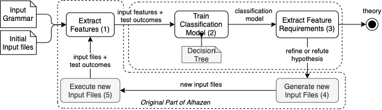

Learning from Failures#
Given the many executions we can generate, it is only natural that these executions would also be subject to machine learning in order to learn which features of the input (or the execution) would be associated with failures.
In this chapter, we study the Alhazen approach, one of the first of this kind.
Alhazen by Kampmann et al. \cite{Kampmann2020} automatically learns the associations between the failure of a program and features of the input data, say “The error occurs whenever the <expr> element is negative”
This chapter is based on an Alhazen implementation contributed by Martin Eberlein of TU Berlin. Thanks a lot, Martin!
# from bookutils import YouTubeVideo
# YouTubeVideo("w4u5gCgPlmg")
Prerequisites
This chapter extends the ideas from the chapter on Generalizing Failure Circumstances.
import bookutils.setup
Synopsis#
To use the code provided in this chapter, write
>>> from debuggingbook.Alhazen import <identifier>
and then make use of the following features.
Note: The examples in this section only work after the rest of the cells have been executed.
This chapter provides an implementation of the Alhazen approach \cite{Kampmann2020}, which trains machine learning classifiers from input features.
Given a test function, a grammar, and a set of inputs, the Alhazen class produces a decision tree that characterizes failure circumstances:
alhazen = Alhazen(sample_runner, CALC_GRAMMAR, initial_sample_list,
max_iterations=20)
alhazen.run()
The final decision tree can be accessed using last_tree():
# alhazen.last_tree()
We can visualize the resulting decision tree using Alhazen.show_decision_tree():
alhazen.show_decision_tree()
A decision tree is read from top to bottom. Decision nodes (with two children) come with a predicate on top. This predicate is either
numeric, such as
<value> > 20, indicating the numeric value of the given symbol, orexistential, such as
<digit> == '1', which has a negative value when False, and a positive value when True.
If the predicate evaluates to True, follow the left path; if it evaluates to False, follow the right path.
A leaf node (no children) will give you the final decision class = BUG or class = NO_BUG.
So if the predicate states <function> == 'sqrt' <= 0.5, this means that
If the function is not
sqrt(the predicate<function> == 'sqrt'is negative, see above, and hence less than 0.5), follow the left (True) path.If the function is
sqrt(the predicate<function> == 'sqrt'is positive), follow the right (False) path.
The samples field shows the number of sample inputs that contributed to this decision.
The gini field (aka Gini impurity) indicates how many samples fall into the displayed class (BUG or NO_BUG).
A gini value of 0.0 means purity - all samples fall into the displayed class.
The saturation of nodes also indicates purity – the higher the saturation, the higher the purity.
There is also a text version available, with much fewer (but hopefully still essential) details:
print(alhazen.friendly_decision_tree())
if <lead-digit> <= 3.5000:
if <function> == 'sqrt':
if <term> <= -11.5000:
if <value> <= 81.5200:
BUG
else:
NO_BUG
else:
NO_BUG
else:
NO_BUG
else:
if <lead-digit> == '4':
if <value> <= 41.9500:
if <function> == 'sqrt':
if <term> == '-<value>':
BUG
else:
NO_BUG
else:
NO_BUG
else:
NO_BUG
else:
NO_BUG
In both representations, we see that the present failure is associated with a negative value for the sqrt function and precise boundaries for its value.
In fact, the error conditions are given in the source code:
import inspect
print(inspect.getsource(task_sqrt))
def task_sqrt(x):
"""Computes the square root of x, using the Newton-Raphson method"""
if x <= -12 and x >= -42:
x = 0 # Guess where the bug is :-)
else:
x = 1
x = max(x, 0)
approx = None
guess = x / 2
while approx != guess:
approx = guess
guess = (approx + x / approx) / 2
return approx
Try out Alhazen on your own code and your own examples!
Machine Learning for Automated Debugging#
When diagnosing why a program fails, the first step is to determine the circumstances under which the program fails. In past chapters, we have examined approaches that correlate execution features with failures as well as tools that systematically generate inputs to reduce failure-inducing inputs or generalize failure circumstances. In this chapter, we will go one step further and make use of full-fledged machine learning to identify failure circumstances (and causes).
The Alhazen Approach#
In 2020, Kampmann et al. \cite{Kampmann2020} presented one of the first approaches to automatically learn circumstances of (failing) program behavior. Their approach associates the program’s failure with the syntactical features of the input data, allowing them to learn and extract the properties that result in the specific behavior.
Their reference implementation Alhazen can generate a diagnosis and explain why, for instance, a particular bug occurs. Alhazen forms a hypothetical model based on the observed inputs. Additional test inputs are generated and executed to refine or refute the hypothesis, eventually obtaining a prediction model of the circumstances of why the behavior in question takes place.
The tool is named after Ḥasan Ibn al-Haytham (latinized name: Alhazen). Often referred to as the “Father of modern optics”, Ibn al-Haytham made significant contributions to the principles of optics and visual perception. Most notably, he was an early proponent of the concept that a hypothesis must be supported by experiments, and thus one of the inventors of the scientific method, the key process in the Alhazen tool.

Let us give a high-level description of how Alhazen works, illustrated above.
Alhazen is given an input grammar and a number of input files (whose format is given by the grammar), and produces a decision tree – a machine learning model that explains under which circumstances the program fails.
Alhazen determines and refines these decision trees in five steps:
For each input file, Alhazen extracts a number of input features that apply. These input features are predicates over the individual elements of the input grammar, such as
<expr> > 0(an<expr>element is larger than zero) orexists(<minus-sign>)(the input contains a minus sign).The test outcomes of the input files label these input files as buggy or non-buggy. From the respective input features and the labels, Alhazen trains a decision tree that associates these features with the labels - that is, the decision tree explains which features lead to buggy or non-buggy.
As it is typically trained on few samples only, the initial classification model may be imprecise. Hence, Alhazen extracts further requirements for additional test cases that may help in increasing precision, such as
<digit> == '6'(we need more inputs in which the<digit>field has a value of6.)Satisfying these requirements, Alhazen then generates additional inputs…
…which it executes, thus again labeling them as buggy or non-buggy. From the new inputs, we can again extract the features, and repeat the cycle.
The whole process keeps on refining decision trees with more and more inputs. Eventually, the decision trees are supposed to be precise enough that they can become theory - that is, an explanation of why the program fails with high predictive power for future inputs.
The Alhazen process thus automates the scientific method of debugging:
making initial observations (Steps 1 and 2),
coming up with hypotheses that explain the observations (Step 3),
designing experiments to further support or refute the hypotheses (Steps 4 and 5),
and repeating the entire process until we have a predicting theory on why the program fails.
Structure of this Chapter#
In the remainder of this chapter, we will first introduce grammars.
We then explore and implement the individual steps of Alhazen:
After this is done, we can compose all these into a single Alhazen class and run it on a sample input.
If you want to see Alhazen in action first (before going into all the details, check out the sample run.)
Inputs and Grammars#
Alhazen heavily builds on grammars as a means to decompose inputs into individual elements, such that it can reason about these elements, and also generate new ones automatically.
To work with grammars, we use the framework provided by The Fuzzing Book. For a more detailed description of Grammars and how to use them for production, have a look at the chapter “Fuzzing with Grammars”
from typing import List, Tuple, Dict, Any, Optional
from fuzzingbook.Grammars import Grammar, EXPR_GRAMMAR, reachable_nonterminals, is_valid_grammar
from fuzzingbook.GrammarFuzzer import GrammarFuzzer, expansion_to_children, DerivationTree, tree_to_string, display_tree, is_nonterminal
from fuzzingbook.Parser import EarleyParser
Let us build a simple grammar for a calculator. The calculator code is listed below.
from math import tan as rtan
from math import cos as rcos
from math import sin as rsin
"""
This file contains the code under test for the example bug.
The sqrt() method fails on x <= 0.
"""
def task_sqrt(x):
"""Computes the square root of x, using the Newton-Raphson method"""
if x <= -12 and x >= -42:
x = 0 # Guess where the bug is :-)
else:
x = 1
x = max(x, 0)
approx = None
guess = x / 2
while approx != guess:
approx = guess
guess = (approx + x / approx) / 2
return approx
def task_tan(x):
return rtan(x)
def task_cos(x):
return rcos(x)
def task_sin(x):
return rsin(x)
The language consists of functions (<function>) that are being invoked on a numerical value (<term>).
CALC_GRAMMAR: Grammar = {
"<start>":
["<function>(<term>)"],
"<function>":
["sqrt", "tan", "cos", "sin"],
"<term>": ["-<value>", "<value>"],
"<value>":
["<integer>.<digits>",
"<integer>"],
"<integer>":
["<lead-digit><digits>", "<digit>"],
"<digits>":
["<digit><digits>", "<digit>"],
"<lead-digit>": # First digit cannot be zero
["1", "2", "3", "4", "5", "6", "7", "8", "9"],
"<digit>":
["0", "1", "2", "3", "4", "5", "6", "7", "8", "9"],
}
We see that the CALC_GRAMMAR consists of several production rules. The calculator subject will only accept inputs that conform to this grammar definition.
Let us load two initial input samples:
sqrt(-16)sqrt(4)
# Load initial input files
initial_sample_list = ['sqrt(-16)', 'sqrt(4)']
Let’s execute our two input samples and observe the calculator’s behavior.
We implement the function sample_runner(sample) that lets us execute the calculator for a single sample. sample_runner(sample) returns an OracleResult for the sample.
from enum import Enum
class OracleResult(Enum):
BUG = "BUG"
NO_BUG = "NO_BUG"
UNDEF = "UNDEF"
def __str__(self):
return self.value
import sys
SUBJECT = "calculator"
def sample_runner(sample):
testcode = sample
try:
# Simply execute the calculator code, with the functions replaced
exec(testcode, {"sqrt": task_sqrt, "tan": task_tan, "sin": task_sin, "cos": task_cos}, {})
return OracleResult.NO_BUG
except ZeroDivisionError:
return OracleResult.BUG
except Exception as e:
print(e, file=sys.stderr)
return OracleResult.UNDEF
Let’s test the function:
sample = "sqrt(-16)"
sample_runner(sample)
<OracleResult.BUG: 'BUG'>
As expected, the sample sqrt(-16) triggers the calculator bug. Let’s try some more samples:
assert sample_runner("sqrt(-23)") == OracleResult.BUG
assert sample_runner("sqrt(44)") == OracleResult.NO_BUG
assert sample_runner("cos(-9)") == OracleResult.NO_BUG
What happens if we parse inputs to calculator that do not conform to its input format?
sample_runner("undef_function(QUERY)")
name 'undef_function' is not defined
<OracleResult.UNDEF: 'UNDEF'>
The function sample_runner(sample) returns an OracleResult.UNDEF whenever the runner is not able to execute the sample.
Finally, we provide the function execute_samples(sample_list) that obtains the oracle/label for a list of samples.
We use the pandas module to place these in a data frame.
import pandas
import numpy
import matplotlib
# Executes a list of samples and return the execution outcome (label)
# The function returns a pandas dataframe
def execute_samples(sample_list):
data = []
for sample in sample_list:
result = sample_runner(sample)
data.append({"oracle": result })
return pandas.DataFrame.from_records(data)
Let us define a bigger list of samples to execute…
sample_list = ["sqrt(-20)", "cos(2)", "sqrt(-100)", "undef_function(foo)"]
… and obtain the execution outcome
labels = execute_samples(sample_list)
labels
name 'undef_function' is not defined
| oracle | |
|---|---|
| 0 | BUG |
| 1 | NO_BUG |
| 2 | NO_BUG |
| 3 | UNDEF |
We can combine these with the sample_list:
for i, row in enumerate(labels['oracle']): print(sample_list[i].ljust(30) + str(row))
sqrt(-20) BUG
cos(2) NO_BUG
sqrt(-100) NO_BUG
undef_function(foo) UNDEF
We can remove the undefined input samples like this:
clean_data = labels.drop(labels[labels.oracle.astype(str) == "UNDEF"].index)
clean_data
| oracle | |
|---|---|
| 0 | BUG |
| 1 | NO_BUG |
| 2 | NO_BUG |
We can combine sample and labels by iterating over the obtained oracle:
oracle = execute_samples(sample_list)
for i, row in enumerate(oracle['oracle']):
print(sample_list[i].ljust(30) + str(row))
sqrt(-20) BUG
cos(2) NO_BUG
sqrt(-100) NO_BUG
undef_function(foo) UNDEF
name 'undef_function' is not defined
We observe that the sample sqrt(-16) triggers a bug in the calculator, whereas the sample sqrt(4) does not show unusual behavior. Of course, we want to know why the sample fails the program. In a typical use case, the developers of the calculator program would now try other input samples and evaluate if similar inputs also trigger the program’s failure. Let’s try some more input samples; maybe we can refine our understanding of why the calculator crashes:
Our guesses - maybe the failure is also in the cos() or tan() function?
guess_samples = ['cos(-16)', 'tan(-16)', 'sqrt(-100)', 'sqrt(-20.23412431234123)']
Let’s obtain the execution outcome for each of our guesses:
guess_oracle = execute_samples(guess_samples)
Here come the results:
for i, row in enumerate(guess_oracle['oracle']):
print(guess_samples[i].ljust(30) + str(row))
cos(-16) NO_BUG
tan(-16) NO_BUG
sqrt(-100) NO_BUG
sqrt(-20.23412431234123) BUG
It looks like the failure only occurs in the sqrt() function, however, only for specific x values.
We could now try other values for x and repeat the process.
However, this would be highly time-consuming and not an efficient debugging technique for a larger and more complex test subject.
Wouldn’t it be great if there was a tool that automatically does this for us? And this is exactly what Alhazen is there for. It helps us explain why specific input features cause a program to fail.
Step 1: Extracting Features#
In this section, we are concerned with the problem of extracting semantic features from inputs. In particular, Alhazen defines various features based on the input grammar, such as existence and numeric interpretation. These features are then extracted from the parse trees of the inputs (see Section 3 of \cite{Kampmann2020} for more details).
The implementation of the feature extraction module consists of the following three tasks:
Implementation of individual feature classes, whose instances allow deriving specific feature values from inputs
Extraction of features from the grammar through instantiation of the aforementioned feature classes
Computation of feature vectors from a set of inputs, which will then be used as input for the decision tree
Internal and “Friendly” Feature Names#
We use two kinds of names for features:
internal names have the form
<SYMBOL>@Nand refer to theN-th expansion of symbol (starting with 0). InCALC_GRAMMAR, for instance,<function>@0refers to the expansion of<function>to"sqrt"friendly names are more user-friendly (hence the name). The above feature
<function>@0has the “friendly” name<function> == "sqrt".
We use internal names in all our interaction with the machine learner, as they are unambiguous and do not contain whitespace. When showing the final results, we switch to “friendly” names.
Implementing Feature Classes#
from abc import ABC, abstractmethod
class Feature(ABC):
'''
The abstract base class for grammar features.
Args:
name : A unique identifier name for this feature. Should not contain Whitespaces.
e.g., 'type(<feature>@1)'
rule : The production rule (e.g., '<function>' or '<value>').
key : The feature key (e.g., the chosen alternative or rule itself).
'''
def __init__(self, name: str, rule: str, key: str, /,
friendly_name: str = None) -> None:
self.name = name
self.rule = rule
self.key = key
self._friendly_name = friendly_name or name
super().__init__()
def __repr__(self) -> str:
'''Returns a printable string representation of the feature.'''
return self.name_rep()
@abstractmethod
def name_rep(self) -> str:
pass
def friendly_name(self) -> str:
return self._friendly_name
@abstractmethod
def get_feature_value(self, derivation_tree) -> float:
'''Returns the feature value for a given derivation tree of an input.'''
pass
def replace(self, new_key: str) -> 'Feature':
'''Returns a new feature with the same name but a different key.'''
return self.__class__(self.name, self.rule, new_key)
class ExistenceFeature(Feature):
'''
This class represents existence features of a grammar. Existence features indicate
whether a particular production rule was used in the derivation sequence of an input.
For a given production rule P -> A | B, a production existence feature for P and
alternative existence features for each alternative (i.e., A and B) are defined.
name : A unique identifier name for this feature. Should not contain Whitespaces.
e.g., 'exist(<digit>@1)'
rule : The production rule.
key : The feature key, equal to the rule attribute for production features,
or equal to the corresponding alternative for alternative features.
'''
def __init__(self, name: str, rule: str, key: str,
friendly_name: str = None) -> None:
super().__init__(name, rule, key, friendly_name=friendly_name)
def name_rep(self) -> str:
if self.rule == self.key:
return f"exists({self.rule})"
else:
return f"exists({self.rule} == {self.key})"
def get_feature_value(self, derivation_tree) -> float:
'''Returns the feature value for a given derivation tree of an input.'''
raise NotImplementedError
def get_feature_value(self, derivation_tree: DerivationTree) -> float:
'''Counts the number of times this feature was matched in the derivation tree.'''
(node, children) = derivation_tree
# The local match count (1 if the feature is matched for the current node, 0 if not)
count = 0
# First check if the current node can be matched with the rule
if node == self.rule:
# Production existance feature
if self.rule == self.key:
count = 1
# Production alternative existance feature
# We compare the children of the expansion with the actual children
else:
expansion_children = list(map(lambda x: x[0], expansion_to_children(self.key)))
node_children = list(map(lambda x: x[0], children))
if expansion_children == node_children:
count= 1
# Recursively compute the counts for all children and return the sum for the whole tree
for child in children:
count = max(count, self.get_feature_value(child))
return count
class NumericInterpretation(Feature):
'''
This class represents numeric interpretation features of a grammar. These features
are defined for productions that only derive words composed of the characters
[0-9], '.', and '-'. The returned feature value corresponds to the maximum
floating-point number interpretation of the derived words of a production.
name : A unique identifier name for this feature. Should not contain Whitespaces.
e.g., 'num(<integer>)'
rule : The production rule.
'''
def __init__(self, name: str, rule: str, /,
friendly_name: str = None) -> None:
super().__init__(name, rule, rule, friendly_name=friendly_name)
def name_rep(self) -> str:
return f"num({self.key})"
def get_feature_value(self, derivation_tree) -> float:
'''Returns the feature value for a given derivation tree of an input.'''
raise NotImplementedError
def get_feature_value(self, derivation_tree: DerivationTree) -> float:
'''Determines the maximum float of this feature in the derivation tree.'''
(node, children) = derivation_tree
value = float('nan')
if node == self.rule:
try:
#print(self.name, float(tree_to_string(derivation_tree)))
value = float(tree_to_string(derivation_tree))
except ValueError:
#print(self.name, float(tree_to_string(derivation_tree)), "err")
pass
# Return maximum value encountered in tree, ignoring all NaNs
tree_values = [value] + [self.get_feature_value(c) for c in children]
if all(numpy.isnan(tree_values)):
return value
else:
return numpy.nanmax(tree_values)
Extracting Feature Sets from Grammars#
def extract_existence_features(grammar: Grammar) -> List[ExistenceFeature]:
'''
Extracts all existence features from the grammar and returns them as a list.
grammar : The input grammar.
'''
features = []
for rule in grammar:
# add the rule
features.append(ExistenceFeature(f"exists({rule})", rule, rule))
# add all alternatives
for count, expansion in enumerate(grammar[rule]):
name = f"exists({rule}@{count})"
friendly_name = f"{rule} == {repr(expansion)}"
feature = ExistenceFeature(name, rule, expansion,
friendly_name=friendly_name)
features.append(feature)
return features
from collections import defaultdict
import re
# Regex for non-terminal symbols in expansions
RE_NONTERMINAL = re.compile(r'(<[^<> ]*>)')
def extract_numeric_features(grammar: Grammar) -> List[NumericInterpretation]:
'''
Extracts all numeric interpretation features from the grammar and returns them as a list.
grammar : The input grammar.
'''
features = []
# Mapping from non-terminals to derivable terminal chars
derivable_chars = defaultdict(set)
for rule in grammar:
for expansion in grammar[rule]:
# Remove non-terminal symbols and whitespace from expansion
terminals = re.sub(RE_NONTERMINAL, '', expansion).replace(' ', '')
# Add each terminal char to the set of derivable chars
for c in terminals:
derivable_chars[rule].add(c)
# Repeatedly update the mapping until convergence
while True:
updated = False
for rule in grammar:
for r in reachable_nonterminals(grammar, rule):
before = len(derivable_chars[rule])
derivable_chars[rule].update(derivable_chars[r])
after = len(derivable_chars[rule])
# Set of derivable chars was updated
if after > before:
updated = True
if not updated:
break
numeric_chars = set(['0','1','2','3','4','5','6','7','8','9','.','-'])
for key in derivable_chars:
# Check if derivable chars contain only numeric chars
if len(derivable_chars[key] - numeric_chars) == 0:
name = f"num({key})"
friendly_name = f"{key}"
features.append(NumericInterpretation(f"num({key})", key,
friendly_name=friendly_name))
return features
def extract_all_features(grammar: Grammar) -> List[Feature]:
return (extract_existence_features(grammar)
+ extract_numeric_features(grammar))
Here are all the features from our calculator grammar:
extract_all_features(CALC_GRAMMAR)
[exists(<start>),
exists(<start> == <function>(<term>)),
exists(<function>),
exists(<function> == sqrt),
exists(<function> == tan),
exists(<function> == cos),
exists(<function> == sin),
exists(<term>),
exists(<term> == -<value>),
exists(<term> == <value>),
exists(<value>),
exists(<value> == <integer>.<digits>),
exists(<value> == <integer>),
exists(<integer>),
exists(<integer> == <lead-digit><digits>),
exists(<integer> == <digit>),
exists(<digits>),
exists(<digits> == <digit><digits>),
exists(<digits> == <digit>),
exists(<lead-digit>),
exists(<lead-digit> == 1),
exists(<lead-digit> == 2),
exists(<lead-digit> == 3),
exists(<lead-digit> == 4),
exists(<lead-digit> == 5),
exists(<lead-digit> == 6),
exists(<lead-digit> == 7),
exists(<lead-digit> == 8),
exists(<lead-digit> == 9),
exists(<digit>),
exists(<digit> == 0),
exists(<digit> == 1),
exists(<digit> == 2),
exists(<digit> == 3),
exists(<digit> == 4),
exists(<digit> == 5),
exists(<digit> == 6),
exists(<digit> == 7),
exists(<digit> == 8),
exists(<digit> == 9),
num(<term>),
num(<value>),
num(<lead-digit>),
num(<digit>),
num(<integer>),
num(<digits>)]
The friendly representation is a bit more concise and more readable:
[f.friendly_name() for f in extract_all_features(CALC_GRAMMAR)]
['exists(<start>)',
"<start> == '<function>(<term>)'",
'exists(<function>)',
"<function> == 'sqrt'",
"<function> == 'tan'",
"<function> == 'cos'",
"<function> == 'sin'",
'exists(<term>)',
"<term> == '-<value>'",
"<term> == '<value>'",
'exists(<value>)',
"<value> == '<integer>.<digits>'",
"<value> == '<integer>'",
'exists(<integer>)',
"<integer> == '<lead-digit><digits>'",
"<integer> == '<digit>'",
'exists(<digits>)',
"<digits> == '<digit><digits>'",
"<digits> == '<digit>'",
'exists(<lead-digit>)',
"<lead-digit> == '1'",
"<lead-digit> == '2'",
"<lead-digit> == '3'",
"<lead-digit> == '4'",
"<lead-digit> == '5'",
"<lead-digit> == '6'",
"<lead-digit> == '7'",
"<lead-digit> == '8'",
"<lead-digit> == '9'",
'exists(<digit>)',
"<digit> == '0'",
"<digit> == '1'",
"<digit> == '2'",
"<digit> == '3'",
"<digit> == '4'",
"<digit> == '5'",
"<digit> == '6'",
"<digit> == '7'",
"<digit> == '8'",
"<digit> == '9'",
'<term>',
'<value>',
'<lead-digit>',
'<digit>',
'<integer>',
'<digits>']
Extracting Feature Values from Inputs#
This is a rather slow implementation. For many grammars with many syntactically features, the feature collection can be optimized.
def collect_features(sample_list: List[str],
grammar: Grammar) -> pandas.DataFrame:
data = []
# parse grammar and extract features
all_features = extract_all_features(grammar)
# iterate over all samples
for sample in sample_list:
parsed_features = {}
parsed_features["sample"] = sample
# initate dictionary
for feature in all_features:
parsed_features[feature.name] = 0
# Obtain the parse tree for each input file
earley = EarleyParser(grammar)
for tree in earley.parse(sample):
for feature in all_features:
parsed_features[feature.name] = feature.get_feature_value(tree)
data.append(parsed_features)
return pandas.DataFrame.from_records(data)
sample_list = ["sqrt(-900)", "sin(24)", "cos(-3.14)"]
collect_features(sample_list, CALC_GRAMMAR)
| sample | exists(<start>) | exists(<start>@0) | exists(<function>) | exists(<function>@0) | exists(<function>@1) | exists(<function>@2) | exists(<function>@3) | exists(<term>) | exists(<term>@0) | ... | exists(<digit>@6) | exists(<digit>@7) | exists(<digit>@8) | exists(<digit>@9) | num(<term>) | num(<value>) | num(<lead-digit>) | num(<digit>) | num(<integer>) | num(<digits>) | |
|---|---|---|---|---|---|---|---|---|---|---|---|---|---|---|---|---|---|---|---|---|---|
| 0 | sqrt(-900) | 1 | 1 | 1 | 1 | 0 | 0 | 0 | 1 | 1 | ... | 0 | 0 | 0 | 0 | -900.00 | 900.00 | 9.0 | 0.0 | 900.0 | 0.0 |
| 1 | sin(24) | 1 | 1 | 1 | 0 | 0 | 0 | 1 | 1 | 0 | ... | 0 | 0 | 0 | 0 | 24.00 | 24.00 | 2.0 | 4.0 | 24.0 | 4.0 |
| 2 | cos(-3.14) | 1 | 1 | 1 | 0 | 0 | 1 | 0 | 1 | 1 | ... | 0 | 0 | 0 | 0 | -3.14 | 3.14 | NaN | 4.0 | 3.0 | 14.0 |
3 rows × 47 columns
# TODO: handle multiple trees
def compute_feature_values(sample: str, grammar: Grammar, features: List[Feature]) -> Dict[str, float]:
'''
Extracts all feature values from an input.
sample : The input.
grammar : The input grammar.
features : The list of input features extracted from the grammar.
'''
earley = EarleyParser(CALC_GRAMMAR)
features = {}
for tree in earley.parse(sample):
for feature in extract_all_features(CALC_GRAMMAR):
features[feature.name_rep()] = feature.get_feature_value(tree)
return features
all_features = extract_all_features(CALC_GRAMMAR)
for sample in sample_list:
print(f"Features of {sample}:")
features = compute_feature_values(sample, CALC_GRAMMAR, all_features)
for feature, value in features.items():
print(f" {feature}: {value}")
Features of sqrt(-900):
exists(<start>): 1
exists(<start> == <function>(<term>)): 1
exists(<function>): 1
exists(<function> == sqrt): 1
exists(<function> == tan): 0
exists(<function> == cos): 0
exists(<function> == sin): 0
exists(<term>): 1
exists(<term> == -<value>): 1
exists(<term> == <value>): 0
exists(<value>): 1
exists(<value> == <integer>.<digits>): 0
exists(<value> == <integer>): 1
exists(<integer>): 1
exists(<integer> == <lead-digit><digits>): 1
exists(<integer> == <digit>): 0
exists(<digits>): 1
exists(<digits> == <digit><digits>): 1
exists(<digits> == <digit>): 1
exists(<lead-digit>): 1
exists(<lead-digit> == 1): 0
exists(<lead-digit> == 2): 0
exists(<lead-digit> == 3): 0
exists(<lead-digit> == 4): 0
exists(<lead-digit> == 5): 0
exists(<lead-digit> == 6): 0
exists(<lead-digit> == 7): 0
exists(<lead-digit> == 8): 0
exists(<lead-digit> == 9): 1
exists(<digit>): 1
exists(<digit> == 0): 1
exists(<digit> == 1): 0
exists(<digit> == 2): 0
exists(<digit> == 3): 0
exists(<digit> == 4): 0
exists(<digit> == 5): 0
exists(<digit> == 6): 0
exists(<digit> == 7): 0
exists(<digit> == 8): 0
exists(<digit> == 9): 0
num(<term>): -900.0
num(<value>): 900.0
num(<lead-digit>): 9.0
num(<digit>): 0.0
num(<integer>): 900.0
num(<digits>): 0.0
Features of sin(24):
exists(<start>): 1
exists(<start> == <function>(<term>)): 1
exists(<function>): 1
exists(<function> == sqrt): 0
exists(<function> == tan): 0
exists(<function> == cos): 0
exists(<function> == sin): 1
exists(<term>): 1
exists(<term> == -<value>): 0
exists(<term> == <value>): 1
exists(<value>): 1
exists(<value> == <integer>.<digits>): 0
exists(<value> == <integer>): 1
exists(<integer>): 1
exists(<integer> == <lead-digit><digits>): 1
exists(<integer> == <digit>): 0
exists(<digits>): 1
exists(<digits> == <digit><digits>): 0
exists(<digits> == <digit>): 1
exists(<lead-digit>): 1
exists(<lead-digit> == 1): 0
exists(<lead-digit> == 2): 1
exists(<lead-digit> == 3): 0
exists(<lead-digit> == 4): 0
exists(<lead-digit> == 5): 0
exists(<lead-digit> == 6): 0
exists(<lead-digit> == 7): 0
exists(<lead-digit> == 8): 0
exists(<lead-digit> == 9): 0
exists(<digit>): 1
exists(<digit> == 0): 0
exists(<digit> == 1): 0
exists(<digit> == 2): 0
exists(<digit> == 3): 0
exists(<digit> == 4): 1
exists(<digit> == 5): 0
exists(<digit> == 6): 0
exists(<digit> == 7): 0
exists(<digit> == 8): 0
exists(<digit> == 9): 0
num(<term>): 24.0
num(<value>): 24.0
num(<lead-digit>): 2.0
num(<digit>): 4.0
num(<integer>): 24.0
num(<digits>): 4.0
Features of cos(-3.14):
exists(<start>): 1
exists(<start> == <function>(<term>)): 1
exists(<function>): 1
exists(<function> == sqrt): 0
exists(<function> == tan): 0
exists(<function> == cos): 1
exists(<function> == sin): 0
exists(<term>): 1
exists(<term> == -<value>): 1
exists(<term> == <value>): 0
exists(<value>): 1
exists(<value> == <integer>.<digits>): 1
exists(<value> == <integer>): 0
exists(<integer>): 1
exists(<integer> == <lead-digit><digits>): 0
exists(<integer> == <digit>): 1
exists(<digits>): 1
exists(<digits> == <digit><digits>): 1
exists(<digits> == <digit>): 1
exists(<lead-digit>): 0
exists(<lead-digit> == 1): 0
exists(<lead-digit> == 2): 0
exists(<lead-digit> == 3): 0
exists(<lead-digit> == 4): 0
exists(<lead-digit> == 5): 0
exists(<lead-digit> == 6): 0
exists(<lead-digit> == 7): 0
exists(<lead-digit> == 8): 0
exists(<lead-digit> == 9): 0
exists(<digit>): 1
exists(<digit> == 0): 0
exists(<digit> == 1): 1
exists(<digit> == 2): 0
exists(<digit> == 3): 1
exists(<digit> == 4): 1
exists(<digit> == 5): 0
exists(<digit> == 6): 0
exists(<digit> == 7): 0
exists(<digit> == 8): 0
exists(<digit> == 9): 0
num(<term>): -3.14
num(<value>): 3.14
num(<lead-digit>): nan
num(<digit>): 4.0
num(<integer>): 3.0
num(<digits>): 14.0
Excursion: Transforming Grammars#
Alhazen requires grammars to be transformed, such that for each non-terminal symbol in the grammar, the word derived by this symbol in the input is added as an alternative to the symbol (as written in \cite{Kampmann2020}). Here, we iterate through the derivation tree of the input and add the derived word of each nonterminal as alternatives to the grammar.
import random
# For this example, fix the random seed so that the produced output is deterministic
random.seed(24)
f = GrammarFuzzer(EXPR_GRAMMAR, max_nonterminals=3)
test_input = f.fuzz()
assert(test_input == tree_to_string(f.derivation_tree))
display_tree(f.derivation_tree)
Let us write a function transform_grammar() that given a sample input and a grammar, transforms it according to Kampmann et al.
def transform_grammar(sample: str,
grammar: Grammar) -> Grammar
The function requires the following input parameter:
sample: an input samplegrammar: the grammar that should be transformed/extended
The function returns the transformed and extended grammar.
# Recursively iterate through the derivation tree and for each non-terminal,
# add the derived word to the grammar
def extend_grammar(derivation_tree, grammar):
(node, children) = derivation_tree
if is_nonterminal(node):
assert(node in grammar)
word = tree_to_string(derivation_tree)
# Only add to grammar if not already existent
if word not in grammar[node]:
grammar[node].append(word)
for child in children:
extend_grammar(child, grammar)
import copy
def transform_grammar(sample: str,
grammar: Grammar) -> Grammar:
# copy of the grammar
transformed_grammar = copy.deepcopy(grammar)
# parse sample
earley = EarleyParser(grammar)
for derivation_tree in earley.parse(sample):
extend_grammar(derivation_tree, transformed_grammar)
return transformed_grammar
Here is an example of a transformed grammar:
transformed_grammar = transform_grammar("1 + 2", EXPR_GRAMMAR)
for rule in transformed_grammar:
print(rule.ljust(10), transformed_grammar[rule])
<start> ['<expr>', '1 + 2']
<expr> ['<term> + <expr>', '<term> - <expr>', '<term>', '1 + 2', '2']
<term> ['<factor> * <term>', '<factor> / <term>', '<factor>', '1', '2']
<factor> ['+<factor>', '-<factor>', '(<expr>)', '<integer>.<integer>', '<integer>', '1', '2']
<integer> ['<digit><integer>', '<digit>', '1', '2']
<digit> ['0', '1', '2', '3', '4', '5', '6', '7', '8', '9']
End of Excursion#
Step 2: Train Classification Model#
Now that we have all the input features and the test outcomes, we can start training a machine learner from these. Although other machine learning models have much higher accuracy, we use decision trees as machine learning models because they are easy to interpret by humans. This is crucial as it will be these very same humans that have to fix the code.
Before we start with our actual implementation, let us first illustrate how training such a classifier works, again using our calculator as an example.
Decision Trees#
We will use scikit-learn as the machine learning library.
The DecisionTreeClassifier can then learn the syntactical input features that are responsible for the bug-triggering behavior of our Calculator.
import sklearn
from sklearn.tree import DecisionTreeClassifier
from sklearn.feature_extraction import DictVectorizer
First, we transform the individual input features (represented as Python dictionaries) into a NumPy array.
For this example, we use the following four features (function-sqrt, function-cos, function-sin, number) to describe an input feature.
(Please note that this is an extremely reduced example; this is not the complete list of features that should be extracted from the CALC_GRAMMAR Grammar.)
The features function-sqrt, function-cos, function-sin state whether the function sqrt, cos, or sin was used.
A 1 is given if the sample contains the respective function, otherwise the feature contains a 0.
For each <function>(x), the number feature describes which value was used for x. For instance, the first input sqrt(-900) corresponds to ‘function-sqrt’: 1 and ‘number’: -900.
# Features for each input, one dict per input
features = [
{'function-sqrt': 1, 'function-cos': 0, 'function-sin': 0, 'number': -900}, # sqrt(-900)
{'function-sqrt': 0, 'function-cos': 1, 'function-sin': 0, 'number': 300}, # cos(300)
{'function-sqrt': 1, 'function-cos': 0, 'function-sin': 0, 'number': -1}, # sqrt(-1)
{'function-sqrt': 0, 'function-cos': 1, 'function-sin': 0, 'number': -10}, # cos(-10)
{'function-sqrt': 0, 'function-cos': 0, 'function-sin': 1, 'number': 36}, # sin(36)
{'function-sqrt': 0, 'function-cos': 0, 'function-sin': 1, 'number': -58}, # sin(-58)
{'function-sqrt': 1, 'function-cos': 0, 'function-sin': 0, 'number': 27}, # sqrt(27)
]
We define a list of labels (or oracles) that state whether the specific input file resulted in a bug or not. We use the OracleResult-Class to keep everything tidy and clean.
# Labels for each input
oracle = [
OracleResult.BUG,
OracleResult.NO_BUG,
OracleResult.BUG,
OracleResult.NO_BUG,
OracleResult.NO_BUG,
OracleResult.NO_BUG,
OracleResult.NO_BUG
]
# Transform to numpy array
vec = DictVectorizer()
X = vec.fit_transform(features).toarray()
Using the feature array and labels, we can now train a decision tree classifier as follows:
# Fix the random state to produce a deterministic result (for illustration purposes only)
clf = DecisionTreeClassifier(random_state=10)
# sci-kit learn requires an array of strings
oracle_clean = [str(c) for c in oracle]
clf = clf.fit(X, oracle_clean)
Let’s have a look at the learned decision tree:
import graphviz
def show_decision_tree(clf, feature_names):
dot_data = sklearn.tree.export_graphviz(clf, out_file=None,
feature_names=feature_names,
class_names=["BUG", "NO_BUG"],
filled=True, rounded=True)
return graphviz.Source(dot_data)
show_decision_tree(clf, vec.get_feature_names_out())
Here is a much reduced textual variant, still retaining the essential features:
import math
def friendly_decision_tree(clf, feature_names,
class_names = ['NO_BUG', 'BUG'],
indent=0):
def _tree(index, indent):
s = ""
feature = clf.tree_.feature[index]
feature_name = feature_names[feature]
threshold = clf.tree_.threshold[index]
value = clf.tree_.value[index]
class_ = int(value[0][0])
class_name = class_names[class_]
left = clf.tree_.children_left[index]
right = clf.tree_.children_right[index]
if left == right:
# Leaf node
s += " " * indent + class_name + "\n"
else:
if math.isclose(threshold, 0.5):
s += " " * indent + f"if {feature_name}:\n"
s += _tree(right, indent + 2)
s += " " * indent + f"else:\n"
s += _tree(left, indent + 2)
else:
s += " " * indent + f"if {feature_name} <= {threshold:.4f}:\n"
s += _tree(left, indent + 2)
s += " " * indent + f"else:\n"
s += _tree(right, indent + 2)
return s
ROOT_INDEX = 0
return _tree(ROOT_INDEX, indent)
print(friendly_decision_tree(clf, vec.get_feature_names_out()))
if function-sqrt:
if number <= 13.0000:
BUG
else:
NO_BUG
else:
NO_BUG
We can see that our initial hypothesis is that the feature function-sqrt must be greater than 0.5 (i.e., present) and the feature number must be less or equal than 13 in order to produce a bug. The decision rule is not yet perfect, thus we need to refine our decision tree!
Learning a Decision Tree#
For Alhazen’s second step (Train Classification Model), we write a function train_tree(data) that trains a decision tree on a given data frame:
def train_tree(data: pandas.core.frame.DataFrame) -> sklearn.tree._classes.DecisionTreeClassifier
The function requires the following parameter:
data: a
pandasdata frame containing the parsed and extracted features and the outcome of the executed input sample (oracle).
For instance, the data frame may look similar to this:
feature_1 |
feature_2 |
… |
oracle |
|---|---|---|---|
1 |
0 |
… |
‘BUG’ |
0 |
1 |
… |
‘NO_BUG’ |
Note: Each row of data['oracle'] is of type OracleResult.
However, sci-kit learn requires an array of strings.
We have to convert them to learn the decision tree.
OUTPUT: the function returns a learned decision tree of type _sklearn.tree._classes.DecisionTreeClassifier_.
def train_tree(data):
sample_bug_count = len(data[(data["oracle"].astype(str) == "BUG")])
assert sample_bug_count > 0, "No bug samples found"
sample_count = len(data)
clf = DecisionTreeClassifier(min_samples_leaf=1,
min_samples_split=2, # minimal value
max_features=None,
max_depth=5, # max depth of the decision tree
class_weight={str("BUG"): (1.0/sample_bug_count),
str("NO_BUG"):
(1.0/(sample_count - sample_bug_count))})
clf = clf.fit(data.drop('oracle', axis=1), data['oracle'].astype(str))
# MARTIN: This is optional, but is a nice extesion that results in nicer decision trees
# clf = treetools.remove_infeasible(clf, features)
return clf
Step 3: Extract Feature Requirements#
In this section, we will extract the learned features from the decision tree. Again, let us first test this manually on our calculator example.
# Features for each input, one dict per input
features = [
{'function-sqrt': 1, 'function-cos': 0, 'function-sin': 0, 'number': -900},
{'function-sqrt': 0, 'function-cos': 1, 'function-sin': 0, 'number': 300},
{'function-sqrt': 1, 'function-cos': 0, 'function-sin': 0, 'number': -1},
{'function-sqrt': 0, 'function-cos': 1, 'function-sin': 0, 'number': -10},
{'function-sqrt': 0, 'function-cos': 0, 'function-sin': 1, 'number': 36},
{'function-sqrt': 0, 'function-cos': 0, 'function-sin': 1, 'number': -58},
{'function-sqrt': 1, 'function-cos': 0, 'function-sin': 0, 'number': 27},
]
# Labels for each input
oracle = [
"BUG",
"NO_BUG",
"BUG",
"NO_BUG",
"NO_BUG",
"NO_BUG",
"NO_BUG"
]
# We can use the sklearn DictVectorizer to transform the features to numpy array:
# Notice: Use the correct labeling of the feature_names
# vec = DictVectorizer()
# X_vec = vec.fit_transform(features).toarray()
# feature_names = vec.get_feature_names_out()
# We can also use a pandas DataFrame and directly parse it to the decision tree learner
feature_names = ['function-sqrt', 'function-cos', 'function-sin', 'number']
X_data = pandas.DataFrame.from_records(features)
# Fix the random state to produce a deterministic result (for illustration purposes only)
clf = DecisionTreeClassifier(random_state=10)
# Train with DictVectorizer
# **Note:** The sklearn `DictVectorizer` uses an internal sort function as default. This will result in different feature_name indices. If you want to use the `Dictvectorizer` please ensure that you only access the feature_names with the function `vec.get_feature_names_out()`.
# We recommend that you use the `pandas` data frame, since this is also the format used in the feedback loop.
# clf = clf.fit(X_vec, oracle)
# Train with Pandas Dataframe
clf = clf.fit(X_data, oracle)
dot_data = sklearn.tree.export_graphviz(clf, out_file=None,
feature_names=feature_names,
class_names=["BUG", "NO BUG"],
filled=True, rounded=True)
graph = graphviz.Source(dot_data)
graph
print(friendly_decision_tree(clf, feature_names, class_names = ['NO_BUG', 'BUG']))
if function-sqrt:
if number <= 13.0000:
BUG
else:
NO_BUG
else:
NO_BUG
Excursion: Tree helper functions#
We bundle several functions that are helpful when working with decision trees.
def all_path(clf, node=0):
"""Iterate over all path in a decision tree. Path will be represented as
a list of integers, each integer is the index of a node in the clf.tree_ structure."""
left = clf.tree_.children_left[node]
right = clf.tree_.children_right[node]
if left == right:
yield [node]
else:
for path in all_path(clf, left):
yield [node] + path
for path in all_path(clf, right):
yield [node] + path
def path_samples(clf, path):
"""Returns the number of samples for this path. """
return clf.tree_.n_node_samples[path[-1]]
def generic_feature_names(clf):
"""Gives a list of feature names of the form f1, f2, ..."""
return ["f{}".format(f) for f in range(0, clf.tree_.n_features)]
def box(clf, path, data=None, feature_names=None):
"""For a decision tree classifier clf and a path path (as returned, e.g. by all_path),
this method gives a pandas DataFrame with the min and max of each feature value on the given path."""
if feature_names is None:
feature_names = generic_feature_names(clf)
check_for_duplicates(feature_names)
if data is None:
bounds = pandas.DataFrame([{'feature': c, 'min': -numpy.inf, 'max': numpy.inf} for c in feature_names],
columns=['feature', 'min', 'max']).set_index(['feature']).transpose()
else:
bounds = pandas.DataFrame([{'feature': c, 'min': data[c].min(), 'max': data[c].max()} for c in feature_names],
columns=['feature', 'min', 'max']).set_index(['feature']).transpose()
for pos in range(0, len(path) - 1):
node = path[pos]
child = path[pos + 1]
feature = feature_names[clf.tree_.feature[node]]
threshold = clf.tree_.threshold[node]
if child == clf.tree_.children_left[node]:
bounds.at['max', feature] = threshold
else:
bounds.at['min', feature] = threshold
return bounds
def rectangles(clf, colormap, data, feature_names=None):
"""yields matplotlib.patches rectangle objects. Each object represents a leaf of the tree."""
if feature_names is None:
feature_names = ['in_x', 'in_y']
if 2 != len(feature_names):
raise AssertionError("Rectangles can only be generated if there are at most 2 features.")
x_feature = feature_names[0]
y_feature = feature_names[1]
for path in all_path(clf):
b = box(clf, path, data=data, feature_names=feature_names)
p = prediction_for_path(clf, path)
c = colormap[p]
rect = matplotlib.patches.Rectangle((b[x_feature]['min'],
b[y_feature]['min']),
# coordinates
b[x_feature]['max'] - b[x_feature]['min'], # width
b[y_feature]['max'] - b[y_feature]['min'], # height
alpha=.2, facecolor=c, edgecolor='k')
yield rect
def prediction_for_path(clf, path) -> OracleResult:
last_value = clf.tree_.value[path[-1]][0]
p_class = numpy.argmax(last_value)
return OracleResult(clf.classes_[p_class])
def rule(clf, path, feature_names, class_names=None):
"""Creates a rule from one path in the decision tree."""
bounds = box(clf, path, feature_names=feature_names)
prediction = prediction_for_path(clf, path)
if class_names is not None:
prediction = class_names[prediction]
feature_rules = []
for fname in feature_names:
min_ = bounds[fname]['min']
max_ = bounds[fname]['max']
if numpy.isinf(min_) and numpy.isinf(max_):
pass # no rule if both are unbound
elif numpy.isinf(min_):
feature_rules.append("{} <= {:.4f}".format(fname, max_))
elif numpy.isinf(max_):
feature_rules.append("{} > {:.4f}".format(fname, min_))
else:
feature_rules.append("{} in {:.4f} to {:.4f}".format(fname, min_, max_))
return " AND ".join(feature_rules), prediction, clf.tree_.impurity[path[-1]], clf.tree_.n_node_samples[path[-1]]
def rules(clf, class_names=None, feature_names=None):
"""Formats Decision trees in a rule-like representation."""
if feature_names is None:
feature_names = generic_feature_names(clf)
samples = clf.tree_.n_node_samples[0]
return "\n".join(["IF {2} THEN PREDICT '{3}' ({0}: {4:.4f}, support: {5} / {1})"
.format(clf.criterion, samples,
*rule(clf, path, feature_names, class_names=class_names)) for path in all_path(clf)])
def grouped_rules(clf, class_names=None, feature_names=None):
"""Formats decision trees in a rule-like representation, grouped by class."""
if feature_names is None:
feature_names = generic_feature_names(clf)
rules = {}
for path in all_path(clf):
rulestr, clz, impurity, support = rule(clf, path, class_names=class_names, feature_names=feature_names)
if clz not in rules:
rules[clz] = []
rules[clz].append((rulestr, impurity, support))
res = ""
samples = clf.tree_.n_node_samples[0]
for clz in rules:
rulelist = rules[clz]
res = res + "\n{}:\n\t".format(clz)
rl = ["{} ({}: {:.4f}, support: {}/{})".format(r, clf.criterion, impurity, support, samples) for r, impurity, support in rulelist]
res = res + "\n\tor ".join(rl)
return res.lstrip()
def check_for_duplicates(names):
seen = set()
for name in names:
if name in seen:
raise AssertionError("Duplicate name: {}".format(name))
seen.add(name)
def is_leaf(clf, node: int) -> bool:
"""returns true if the given node is a leaf."""
return clf.tree_.children_left[node] == clf.tree_.children_right[node]
def leaf_label(clf, node: int) -> int:
"""returns the index of the class at this node. The node must be a leaf."""
assert(is_leaf(clf, node))
occs = clf.tree_.value[node][0]
idx = 0
maxi = occs[idx]
for i, o in zip(range(0, len(occs)), occs):
if maxi < o:
maxi = o
idx = i
return idx
def find_existence_index(features: List[Feature], feature: Feature):
for idx, f in enumerate(features):
if isinstance(f, ExistenceFeature) and f.key() == feature.key():
return idx
raise AssertionError("There is no existence feature with this key!")
def remove_infeasible(clf, features: List[Feature]):
for node in range(0, clf.tree_.node_count):
if not is_leaf(clf, node):
feature = features[clf.tree_.feature[node]]
threshold = clf.tree_.threshold[node]
if not feature.is_feasible(threshold):
clf.tree_.feature[node] = find_existence_index(features, feature)
clf.tree_.threshold[node] = 0.5
return clf
def iterate_nodes(clf):
stack = [0]
while 0 != len(stack):
node = stack.pop()
yield node
if not is_leaf(clf, node):
stack.append(clf.tree_.children_left[node])
stack.append(clf.tree_.children_right[node])
def count_nodes(clf):
return len(list(iterate_nodes(clf)))
def count_leaves(clf):
return len([n for n in iterate_nodes(clf) if is_leaf(clf, n)])
def list_features(clf):
return [clf.tree_.feature[node] for node in iterate_nodes(clf)]
def remove_unequal_decisions(clf):
"""
This method rewrites a decision tree classifier to remove nodes where the same
decision is taken on both sides.
:param clf: a decision tree classifier
:return: the same classifier, rewritten
"""
changed = True
while changed:
changed = False
for node in range(0, clf.tree_.node_count):
if not is_leaf(clf, node) and (is_leaf(clf, clf.tree_.children_left[node]) and is_leaf(clf, clf.tree_.children_right[node])):
# both children of this node are leaves
left_label = leaf_label(clf, clf.tree_.children_left[node])
right_label = leaf_label(clf, clf.tree_.children_right[node])
if left_label == right_label:
clf.tree_.children_left[node] = -1
clf.tree_.children_right[node] = -1
clf.tree_.feature[node] = -2
changed = True
assert(left_label == leaf_label(clf, node))
return clf
End of Excursion#
Excursion: Converting Trees to Paths#
We bundle a number of helper functions that extract paths from trees.
class TreeRequirement:
def __init__(self, feature: Feature, mini, maxi):
self.__feature: Feature = feature
self.__mini = mini
self.__maxi = maxi
def feature(self) -> Feature:
return self.__feature
def select(self, data):
"""Returns a vector of booleans, suitable for selecting in a pandas data frame."""
if self.__mini is None:
return data[self.__feature.name()] <= self.__maxi
if self.__maxi is None:
return self.__mini <= data[self.__feature.name()]
return (self.__mini <= data[self.__feature.name()]) & (data[self.__feature.name()] <= self.__maxi)
def mini(self):
return self.__mini
def maxi(self):
return self.__maxi
def get_key(self) -> str:
return self.__feature.key()
def is_binary(self) -> bool:
return self.__feature.is_binary()
def get_str(self, bounds) -> str:
if self.is_binary():
if self.__mini < 0 <= self.__maxi:
# feature is NOT included
return f"!{self.__feature.name()}"
if self.__mini < 1 <= self.__maxi:
# feature is included
return self.__feature.name()
raise AssertionError("How is this possible?")
else:
if (not numpy.isinf(self.__mini)) and (not numpy.isinf(self.__maxi)):
return f"{self.__feature.name()} in [{self.__mini}, {self.__maxi}]"
elif not numpy.isinf(self.__maxi):
return f"{self.__feature.name()} <= {self.__maxi}"
else:
return f"{self.__feature.name()} > {self.__mini}"
def get_str_ext(self) -> str:
if (not numpy.isinf(self.__mini)) and (not numpy.isinf(self.__maxi)):
return f"{self.__feature} in [{self.__mini}, {self.__maxi}]"
elif not numpy.isinf(self.__maxi):
return f"{self.__feature} <= {self.__maxi}"
else:
return f"{self.__feature} > {self.__mini}"
def get_neg(self, bounds) -> List[str]:
if self.is_binary():
if self.__mini < 0 <= self.__maxi:
# feature is NOT included, so, the negated condition is to include it
return [self.__feature.name()]
if self.__mini < 1 <= self.__maxi:
# feature is included, so exclude it
return [f"!{self.__feature.name()}"]
raise AssertionError("How is this possible?")
else:
if (not numpy.isinf(self.__mini)) and (not numpy.isinf(self.__maxi)):
return [f"{self.__feature.name()} in [{bounds.at['min', self.__feature.name()]},{self.__mini}]",
f"{self.__feature.name()} in [{self.__maxi}, {bounds.at['max', self.__feature.name()]}]"]
elif not numpy.isinf(self.__maxi):
return [f"{self.__feature.name()} <= {self.__maxi}"]
else:
return [f"{self.__feature.name()} > {self.__mini}"]
def get_neg_ext(self, bounds) -> List[str]:
if (not numpy.isinf(self.__mini)) and (not numpy.isinf(self.__maxi)):
return [f"{self.__feature} in [{bounds.at['min', self.__feature]},{self.__mini}]",
f"{self.__feature} in [{self.__maxi}, {bounds.at['max', self.__feature]}]"]
elif not numpy.isinf(self.__maxi):
return [f"{self.__feature} > {self.__maxi}"]
else:
return [f"{self.__feature} <= {self.__mini}"]
from pathlib import Path
class TreePath:
def __init__(self, samplefile: Optional[Path], is_bug: bool, requirements: List[TreeRequirement]):
self.__sample = samplefile
self.__is_bug = is_bug
self.__requirements: List[TreeRequirement] = requirements
def is_bug(self) -> bool:
return self.__is_bug
def get(self, idx):
return self.__requirements[idx]
def find_sample(self, data):
for req in self.__requirements:
data = data[req.select(data)]
if 0 != len(data):
return data["abs_file"][0]
return None
def __len__(self) -> int:
return len(self.__requirements)
def lower_middle(start, end):
if start == end:
return start - abs(start)
return start + ((end - start)/2)
def upper_middle(start, end):
if start == end:
return end + abs(end)
return start + ((end - start)/2)
def min_digits(mini):
return int("1" + "".join([0] * int(mini-1)))
def max_digits(maxi):
return int("".join([9] * int(maxi)))
def tree_to_paths(tree, features: List[Feature]):
paths = []
# go through tree leaf by leaf
for path in all_path(tree):
requirements = []
is_bug = OracleResult.BUG == prediction_for_path(tree, path)
# find the requirements
box_ = box(tree, path, feature_names=features).transpose()
for feature, row in box_.iterrows():
mini = row['min']
maxi = row['max']
if (not numpy.isinf(mini)) or (not numpy.isinf(maxi)):
requirements.append(TreeRequirement(feature, mini, maxi))
paths.append(TreePath(None, is_bug, requirements))
return paths
# We provide a functionallity to extract the paths from a decision tree.
all_paths = tree_to_paths(clf, feature_names)
Here is an example:
for count, path in enumerate(all_paths):
string_path = path.get(0).get_str_ext()
for box_ in range(1, len(path)):
string_path += " " + path.get(box_).get_str_ext()
print(f"Path {count}: {string_path}, is_bug: {path.is_bug()}")
Path 0: function-sqrt <= 0.5, is_bug: False
Path 1: function-sqrt > 0.5 number <= 13.0, is_bug: True
Path 2: function-sqrt > 0.5 number > 13.0, is_bug: False
End of Excursion#
Step 4: Generating New Samples#
The next step is to generate new samples. For this purpose, we negate the requirements on a path to refine and refute the decision tree.
Negating Requirements#
First we will determine some boundaries to obtain better path negations.
x = pandas.DataFrame.from_records(features)
bounds = pandas.DataFrame([{'feature': c, 'min': x[c].min(), 'max': x[c].max()}
for c in feature_names],
columns=['feature', 'min', 'max']).set_index(['feature']).transpose()
We can use the function path.get(i).get_neg_ext(bounds) to obtain a negation for a single requirement on a path (indexed with i).
Let’s verify if we can negate a whole path.
for count, path in enumerate(all_paths):
negated_string_path = path.get(0).get_neg_ext(bounds)[0]
for box_ in range(1, len(path)):
negated_string_path += " " + str(path.get(box_).get_neg_ext(bounds)[0])
print(f"Path {count}: {negated_string_path}, is_bug: {path.is_bug()}")
Path 0: function-sqrt > 0.5, is_bug: False
Path 1: function-sqrt <= 0.5 number > 13.0, is_bug: True
Path 2: function-sqrt <= 0.5 number <= 13.0, is_bug: False
Systematically Negating Paths#
We will use the Decision tree and extract new input specifications to refine or refute our hypothesis (See Section 4.1 “Extracting Prediction Paths” in \cite{Kampmann2020}). These input specifications will be parsed to the input generator that tries to generate new inputs that fulfill the defined input specifications.
def extracting_prediction_paths(clf, feature_names, data):
# determine the bounds
bounds = pandas.DataFrame([{'feature': c, 'min': data[c].min(), 'max': data[c].max()}
for c in feature_names],
columns=['feature', 'min', 'max']).set_index(['feature']).transpose()
# go through tree leaf by leaf
all_reqs = set()
for path in tree_to_paths(clf, feature_names):
# generate conditions
for i in range(0, len(path)+1):
reqs_list = []
bins = format(i, "#0{}b".format(len(path)+2))[2:]
for p, b in zip(range(0, len(bins)), bins):
r = path.get(p)
if '1' == b:
reqs_list.append(r.get_neg_ext(bounds))
else:
reqs_list.append([r.get_str_ext()])
for reqs in all_combinations(reqs_list):
all_reqs.add(", ".join(sorted(reqs)))
return all_reqs
def all_combinations(reqs_lists):
result = [[]]
for reqs in reqs_lists:
t = []
for r in reqs:
for i in result:
t.append(i+[r])
result = t
return result
We will use the Decision tree and extract new input specifications to refine or refute our hypothesis (See paper Section 4.1 - Extracting Prediction Paths). These input specifications will be parsed to the input generator that tries to generate new inputs that fulfill the defined input specifications.
new_prediction_paths = extracting_prediction_paths(clf, feature_names, data=x)
for path in new_prediction_paths:
print(path)
function-sqrt <= 0.5, number <= 13.0
function-sqrt > 0.5, number > 13.0
function-sqrt <= 0.5
function-sqrt <= 0.5, number > 13.0
function-sqrt > 0.5, number <= 13.0
function-sqrt > 0.5
Input Specification Parser#
Once we have input specifications, we must again extract them from the decision tree so we can interpret them.
import string
SPEC_GRAMMAR: Grammar = {
"<start>":
["<req_list>"],
"<req_list>":
["<req>", "<req>"", ""<req_list>"],
"<req>":
["<feature>"" ""<quant>"" ""<num>"],
"<feature>": ["exists(<string>)",
"num(<string>)",
# currently not used
"char(<string>)",
"length(<string>)"],
"<quant>":
["<", ">", "<=", ">="],
"<num>": ["-<value>", "<value>"],
"<value>":
["<integer>.<integer>",
"<integer>"],
"<integer>":
["<digit><integer>", "<digit>"],
"<digit>":
["0", "1", "2", "3", "4", "5", "6", "7", "8", "9"],
'<string>': ['<letters>'],
'<letters>': ['<letter><letters>', '<letter>'],
'<letter>': list(string.ascii_letters + string.digits + string.punctuation)
}
assert is_valid_grammar(SPEC_GRAMMAR)
Excursion: Validating the Parser#
Let’s validate our grammar, by using the grammar to produce 100 sample requirement specifications
g = GrammarFuzzer(SPEC_GRAMMAR, max_nonterminals=100)
earley = EarleyParser(SPEC_GRAMMAR)
for i in range(10):
sample = g.fuzz()
print(sample)
char(o/vy) >= 7
exists(E) <= 822.9
length(VnMoy) > -6460.3, exists(T) > 6, num(b) >= -1.03
length(f) >= -7677, char(O:t) < -6
length(x`) <= 08
num(@) >= 1.695, exists(=7&) > 23
exists(rV) >= -5.9, exists(|) <= 6969.0
length(bd) >= 4.8
num(8) <= 44.870, length(8xz') <= 13
exists(H) >= 0.4, num(#) > 1, exists(Q) >= -600.19
g = GrammarFuzzer(SPEC_GRAMMAR, max_nonterminals= 100)
earley = EarleyParser(SPEC_GRAMMAR)
for i in range(100):
sample = g.fuzz()
for tree in earley.parse(sample):
assert tree_to_string(tree) == sample, f"{tree_to_string(tree)} and {sample} are not equal"
Let’s also try with some real requirement specifications:
earley = EarleyParser(SPEC_GRAMMAR)
teststrings = ['exists(<function>@0) > 0.5, exists(<term>@0) <= 0.5, exists(<value>@1) <= 0.5',
'exists(<digit>@9) <= 0.5, exists(<function>@0) > 0.5, num(<term>) > 0.05000000074505806',
'exists(<digit>@2) <= 0.5, exists(<function>@0) < 0.5, num(<term>) <= 0.05000000074505806',
'exists(<function>@0) > 0.5, num(<term>) > -3965678.1875']
for count, sample in enumerate(teststrings):
for tree in earley.parse(sample):
assert tree_to_string(tree) == teststrings[count], \
f"{tree_to_string(tree)} and {teststrings[count]} are not equal"
End of Excursion#
Retrieving New input Specifications#
The following classes represent requirements for the test cases to be generated.
class SpecRequirement:
'''
This class represents a requirement for a new input sample that should be generated.
This class contains the feature that should be fullfiled (Feature), a quantifier
("<", ">", "<=", ">=") and a value. For instance exist(feature) >= 0.5 states that
the syntactical existence feature should be used to produce a new input.
feature : Is the associated feature class
quant : The quantifier
value : The value of the requirement. Note that for existence features this value
is allways between 0 and 1.
'''
def __init__(self, feature: Feature, quantificator, value):
self.feature: Feature = feature
self.quant = quantificator
self.value = value
def __str__(self):
return f"Requirement({self.feature.name} {self.quant} {self.value})"
def __repr__(self):
return f"Requirement({self.feature.name}, {self.quant}, {self.value})"
def friendly(self):
def value(x):
try:
return float(x)
except Exception:
return None
if isinstance(self.feature, ExistenceFeature):
if value(self.value) > 0:
return f"{self.feature.friendly_name()}"
elif value(self.value) < 0:
return f"not {self.feature.friendly_name()}"
return f"{self.feature.friendly_name()} {self.quant} {self.value}"
class InputSpecification:
'''
This class represents a complete input specification of a new input. A input specification
consists of one or more requirements.
requirements : Is a list of all requirements that must be used.
'''
def __init__(self, requirements: List[SpecRequirement]):
self.requirements: List[SpecRequirement] = requirements
def __str__(self):
s = ", ".join(str(r) for r in self.requirements)
return f"InputSpecification({s})"
def friendly(self):
return " and ".join(r.friendly() for r in self.requirements)
def __repr__(self):
return self.__str__()
def get_all_subtrees(derivation_tree, non_terminal):
'''
Iteratively returns a list of subtrees that start with a given non_terminal.
'''
subtrees = []
(node, children) = derivation_tree
if node == non_terminal:
subtrees.append(derivation_tree)
for child in children:
subtrees = subtrees + get_all_subtrees(child, non_terminal)
return subtrees
def create_new_input_specification(derivation_tree, all_features) -> InputSpecification:
'''
This function creates a new input specification for a parsed decision tree path.
The input derivation_tree corresponds to a already negated path in the decision tree.
'''
requirement_list = []
for req in get_all_subtrees(derivation_tree, '<req>'):
feature_name = tree_to_string(get_all_subtrees(req, '<feature>')[0])
quant = tree_to_string(get_all_subtrees(req, '<quant>')[0])
value = tree_to_string(get_all_subtrees(req, '<num>')[0])
feature_class = None
for f in all_features:
if f.name == feature_name:
feature_class = f
requirement_list.append(SpecRequirement(feature_class, quant, value))
return InputSpecification(requirement_list)
def get_all_input_specifications(dec_tree,
all_features: List[Feature],
feature_names: List[str],
data) -> List[InputSpecification]:
'''
Returns a complete list new input specification that were extracted from a learned decision tree.
INPUT:
- dec_tree : The learned decision tree.
- all_features : A list of all features
- feature_names : The list of the feature names (feature.name)
- data. : The data that was used to learn the decision tree
OUTPUT:
- Returns a list of InputSpecifications
'''
prediction_paths = extracting_prediction_paths(dec_tree, feature_names, data)
input_specifications = []
# parse all extracted paths
for r in prediction_paths:
earley = EarleyParser(SPEC_GRAMMAR)
try:
for tree in earley.parse(r):
input_specifications.append(create_new_input_specification(tree, all_features))
except SyntaxError:
# Catch Parsing Syntax Errors: num(<term>) in [-900, 0] will fail; Might fix later
# For now, inputs following that form will be ignored
pass
return input_specifications
Excursion: Testing Specifications#
sample_prediction_paths = ['exists(<function>@0) > 0.5, num(<term>) <= -38244758.0',
'exists(<digit>@7) <= 0.5, exists(<function>@0) > 0.5, num(<term>) <= 0.05000000074505806',
'exists(<digit>) > 1.5, exists(<function>@0) > 0.5, num(<term>) <= 0.21850000321865082',
'exists(<function>@0) > 0.5']
expected_input_specifications = ['InputSpecification(Requirement(exists(<function>@0) > 0.5), Requirement(num(<term>) <= -38244758.0))',
'InputSpecification(Requirement(exists(<digit>@7) <= 0.5), Requirement(exists(<function>@0) > 0.5), Requirement(num(<term>) <= 0.05000000074505806))',
'InputSpecification(Requirement(exists(<digit>) > 1.5), Requirement(exists(<function>@0) > 0.5), Requirement(num(<term>) <= 0.21850000321865082))',
'InputSpecification(Requirement(exists(<function>@0) > 0.5))']
all_features = extract_all_features(CALC_GRAMMAR)
earley = EarleyParser(SPEC_GRAMMAR)
for count, sample in enumerate(sample_prediction_paths):
for tree in earley.parse(sample):
input_specification = create_new_input_specification(tree, all_features)
assert str(input_specification) == expected_input_specifications[count], \
f"{str(input_specification)} is not equal to {expected_input_specifications[count]}"
If no assertion is triggered, then everything seems to work.
End of Excursion#
We implement a Grammar-Based Input Generator that generates new input samples from a List of InputSpecifications.
The input specifications are extracted from the decision tree boundaries in the previous Step 3: RequirementExtraction.
An InputSpecification consists of 1 to n many predicates or requirements (e.g. <feature> >= value, or num(<term>) <= 13).
We generate a new input for each InputSpecification.
The new input fulfills all the given requirements of an InputSpecification.
For further details, please refer to Section 4.4 and 4.5 of \cite{Kampmann2020} and the Chapter Efficient Grammar Fuzzing in the Fuzzing Book.
We define a function generate_samples() with the following input parameters:
grammar: the grammar used to produce new inputs (e.g. the CALCULATOR-Grammar)new_input_specification: a List of new inputs specifications (typeList[InputSpecification])timeout: a max time budget. Return the generated inputs when the time budget is exceeded.
The function returns a list of new inputs that are specified by the given input specifications.
import time
import copy
from copy import deepcopy
import random
from itertools import chain
def best_trees(forest, spec, grammar):
samples = [tree_to_string(tree) for tree in forest]
fulfilled_fractions= []
for sample in samples:
gen_features = collect_features([sample], grammar)
# calculate percentage of fulfilled requirements (used to rank the sample)
fulfilled_count = 0
total_count = len(spec.requirements)
for req in spec.requirements:
# for now, interpret requirement(exists(<...>) <= number) as false and requirement(exists(<...>) > number) as true
if isinstance(req.feature, ExistenceFeature):
expected = 1.0 if req.quant == '>' or req.quant == '>=' else 0.0
actual = gen_features[req.feature.name][0]
if actual == expected:
fulfilled_count += 1
else:
pass
# print(f'{req.feature} expected: {expected}, actual:{actual}')
elif isinstance(req.feature, NumericInterpretation):
expected_value = float(req.value)
actual_value = gen_features[req.feature.name][0]
fulfilled = False
if req.quant == '<':
fulfilled = actual_value < expected_value
elif req.quant == '<=':
fulfilled = actual_value <= expected_value
elif req.quant == '>':
fulfilled = actual_value > expected_value
elif req.quant == '>=':
fulfilled = actual_value >= expected_value
if fulfilled:
fulfilled_count += 1
else:
pass
# print(f'{req.feature} expected: {expected_value}, actual:{actual_value}')
fulfilled_fractions.append(fulfilled_count / total_count)
# print(f'Fraction of fulfilled requirements: {fulfilled_count / total_count}')
max_frac = max(fulfilled_fractions)
best_chosen = []
if max_frac == 1.0:
return True, forest[fulfilled_fractions.index(1.0)]
for i, t in enumerate(forest):
if fulfilled_fractions[i] == max_frac:
best_chosen.append(t)
return False, best_chosen
# well, not perfect and probably not very robust. but it works :)
def generate_samples_advanced(grammar: Grammar,
new_input_specifications: List[InputSpecification],
timeout: int) -> List[str]:
# if there are no input specifications: generate some random samples
if len(new_input_specifications) == 0:
fuzzer = GrammarFuzzer(grammar)
samples = [fuzzer.fuzz() for _ in range(100)]
return samples
final_samples = []
each_spec_timeout = timeout / len(new_input_specifications)
rhs_nonterminals = grammar.keys()# list(chain(*[nonterminals(expansion) for expansion in grammar[rule]]))
fuzzer = GrammarFuzzer(grammar)
for spec in new_input_specifications:
done = False
starttime = time.time()
best_chosen = [fuzzer.fuzz_tree() for _ in range(100)]
done, best_chosen = best_trees(best_chosen, spec, grammar)
if done:
final_samples.append(tree_to_string(best_chosen))
while not done and time.time() - starttime < each_spec_timeout:
# split in prefix, postfix and try to reach targets
for tree in best_chosen:
prefix_len = random.randint(1, 3)
curr = tree
valid = True
for i in range(prefix_len):
nt, children = curr
poss_desc_idxs = []
for c_idx, c in enumerate(children):
s, _ = c
possible_descend = s in rhs_nonterminals
if possible_descend:
poss_desc_idxs.append(c_idx)
if len(poss_desc_idxs) < 1:
valid = False
break
desc = random.randint(0, len(poss_desc_idxs) - 1)
curr = children[poss_desc_idxs[desc]]
if valid:
nt, _ = curr
for req in spec.requirements:
if isinstance(req.feature, NumericInterpretation) and nt == req.feature.key:
# hacky: generate a derivation tree for this numeric interpretation
hacky_grammar = copy.deepcopy(grammar)
hacky_grammar["<start>"] = [nt]
parser = EarleyParser(hacky_grammar)
try:
test = parser.parse(req.value)
x = list(test)[0]
_, s = x
# print(str(s[0]))
# replace curr in tree with this new tree
curr = s[0]
except SyntaxError:
pass
done, best_chosen = best_trees(best_chosen, spec, grammar)
if done:
final_samples.append(tree_to_string(best_chosen))
if not done:
final_samples.extend([tree_to_string(t) for t in best_chosen])
return final_samples
Here’s another interesting generator function:
def generate_samples_random(grammar: Grammar,
new_input_specifications: List[InputSpecification],
timeout: int) -> List[str]:
f = GrammarFuzzer(grammar, max_nonterminals=50, log=False)
data = []
for _ in range(num):
new_input = f.fuzz()
data.append(new_input)
return data
This is what we use as default:
def generate_samples(grammar: Grammar,
new_input_specifications: List[InputSpecification],
timeout: int) -> List[str]:
# Could also be generate_samples_random()
return generate_samples_advanced(grammar, new_input_specifications, timeout)
Excursion: Some Tests#
exsqrt = ExistenceFeature('exists(<function>@0)', '<function>', 'sqrt')
exdigit = ExistenceFeature('exists(<digit>)', '<digit>', '<digit>')
reqDigit = SpecRequirement(exdigit, '>', '0.5')
fbdDigit = SpecRequirement(exdigit, '<=', '0.5')
req0 = SpecRequirement(exsqrt, '>', '-6.0')
testspec0 = InputSpecification([req0, reqDigit])
req1 = SpecRequirement(exsqrt, '<=', '-6.0')
testspec1 = InputSpecification([req1, fbdDigit])
numterm = NumericInterpretation('num(<term>)', '<term>')
req2 = SpecRequirement(numterm, '<', '-31.0')
testspec2 = InputSpecification([req2, req0, reqDigit])
print('--generating samples--')
# samples = generate_samples(CALC_GRAMMAR, [testspec0, testspec1], 10)
samples = generate_samples(CALC_GRAMMAR, [testspec2], 10)
samples
--generating samples--
['sqrt(-81743)']
End of Excursion#
Step 5: Executing New Inputs#
We are almost done! All that is left is putting the above pieces together and create a loop around them.
The Alhazen Class#
We implement a class Alhazen that serves as main entry point for our approach.
class Alhazen:
def __init__(self,
runner: Any,
grammar: Grammar,
initial_inputs: List[str], /,
verbose: bool = False,
max_iterations: int = 10,
generator_timeout: int = 10):
self._initial_inputs = initial_inputs
self._runner = runner
self._grammar = grammar
self._verbose = verbose
self._max_iter = max_iterations
self._previous_samples = None
self._data = None
self._trees = []
self._generator_timeout = generator_timeout
self._setup()
class Alhazen(Alhazen):
def _setup(self):
self._previous_samples = self._initial_inputs
self._all_features = extract_all_features(self._grammar)
self._feature_names = [f.name for f in self._all_features]
if self._verbose:
print("Features:", ", ".join(f.friendly_name()
for f in self._all_features))
class Alhazen(Alhazen):
def _add_new_data(self, exec_data, feature_data):
joined_data = exec_data.join(feature_data.drop(['sample'], axis=1))
# Only add valid data
new_data = joined_data[(joined_data['oracle'] != OracleResult.UNDEF)]
new_data = joined_data.drop(joined_data[joined_data.oracle.astype(str) == "UNDEF"].index)
if 0 != len(new_data):
if self._data is None:
self._data = new_data
else:
self._data = pandas.concat([self._data, new_data], sort=False)
class Alhazen(Alhazen):
def execute_samples(self, sample_list = None):
if sample_list is None:
sample_list = self._initial_inputs
data = []
for sample in sample_list:
result = self._runner(sample)
data.append({"oracle": result })
return pandas.DataFrame.from_records(data)
class Alhazen(Alhazen):
def run(self):
for iteration in range(1, self._max_iter + 1):
if self._verbose:
print(f"\nIteration #{iteration}")
self._iterate(self._previous_samples)
class Alhazen(Alhazen):
def all_trees(self, /, prune: bool = True):
trees = self._trees
if prune:
trees = [remove_unequal_decisions(tree) for tree in self._trees]
return trees
def last_tree(self, /, prune: bool = True):
return self.all_trees(prune=prune)[-1]
class Alhazen(Alhazen):
def _iterate(self, sample_list):
# Run samples, obtain test outcomes
exec_data = self.execute_samples(sample_list)
# Step 1: Extract features from the new samples
feature_data = collect_features(sample_list, self._grammar)
# Combine the new data with the already existing data
self._add_new_data(exec_data, feature_data)
# display(self._data)
# Step 2: Train the Decision Tree Classifier
dec_tree = train_tree(self._data)
self._trees.append(dec_tree)
if self._verbose:
print(" Decision Tree:")
all_features = extract_all_features(self._grammar)
all_feature_names = [f.friendly_name() for f in all_features]
print(friendly_decision_tree(dec_tree, all_feature_names, indent=4))
# Step 3: Extract new requirements from the tree
new_input_specifications = get_all_input_specifications(dec_tree,
self._all_features,
self._feature_names,
self._data.drop(['oracle'], axis=1))
if self._verbose:
print(f" New input specifications:")
for spec in new_input_specifications:
print(f" {spec.friendly()}")
# Step 4: Generate new inputs according to the new input specifications
new_samples = generate_samples(self._grammar,
new_input_specifications,
self._generator_timeout)
if self._verbose:
print(f" New samples:")
print(f" {', '.join(new_samples)}")
self._previous_samples = new_samples
class Alhazen(Alhazen):
def all_feature_names(self, friendly: bool = True) -> List[str]:
if friendly:
all_feature_names = [f.friendly_name() for f in self._all_features]
else:
all_feature_names = [f.name for f in self._all_features]
return all_feature_names
class Alhazen(Alhazen):
def show_decision_tree(self, tree = None, friendly: bool = True):
return show_decision_tree(tree or self.last_tree(),
self.all_feature_names())
class Alhazen(Alhazen):
def friendly_decision_tree(self, tree = None):
return friendly_decision_tree(tree or self.last_tree(),
self.all_feature_names())
A Sample Run#
We can finally run Alhazen!
Set the number of refinement iterations and the timeout for the input generator. The execution time of Alhazen mainly depends on the number of iterations.
MAX_ITERATIONS = 20
GENERATOR_TIMEOUT = 10 # timeout in seconds
We initialize Alhazen with the previously used initial_sample_list:
initial_sample_list
['sqrt(-16)', 'sqrt(4)']
And here we go! When initialized with verbose=True, Alhazen prints its progress during execution, issuing for each iteration
the last decision tree
the new input specification resulting from the tree
the new samples satisfying the input specification.
alhazen = Alhazen(sample_runner, CALC_GRAMMAR, initial_sample_list,
verbose=True,
max_iterations=MAX_ITERATIONS,
generator_timeout=GENERATOR_TIMEOUT)
alhazen.run()
Features: exists(<start>), <start> == '<function>(<term>)', exists(<function>), <function> == 'sqrt', <function> == 'tan', <function> == 'cos', <function> == 'sin', exists(<term>), <term> == '-<value>', <term> == '<value>', exists(<value>), <value> == '<integer>.<digits>', <value> == '<integer>', exists(<integer>), <integer> == '<lead-digit><digits>', <integer> == '<digit>', exists(<digits>), <digits> == '<digit><digits>', <digits> == '<digit>', exists(<lead-digit>), <lead-digit> == '1', <lead-digit> == '2', <lead-digit> == '3', <lead-digit> == '4', <lead-digit> == '5', <lead-digit> == '6', <lead-digit> == '7', <lead-digit> == '8', <lead-digit> == '9', exists(<digit>), <digit> == '0', <digit> == '1', <digit> == '2', <digit> == '3', <digit> == '4', <digit> == '5', <digit> == '6', <digit> == '7', <digit> == '8', <digit> == '9', <term>, <value>, <lead-digit>, <digit>, <integer>, <digits>
Iteration #1
Decision Tree:
if <digits> == '<digit>':
BUG
else:
NO_BUG
New input specifications:
<digits> == '<digit>'
<digits> == '<digit>'
New samples:
sqrt(-5), sqrt(8.90)
Iteration #2
Decision Tree:
if <integer> == '<digit>':
NO_BUG
else:
BUG
New input specifications:
<integer> == '<digit>'
<integer> == '<digit>'
New samples:
sqrt(-8), tan(-856427.34926)
Iteration #3
Decision Tree:
if <digits> <= 48.0000:
BUG
else:
NO_BUG
New input specifications:
<digits> <= 48.0
<digits> > 48.0
New samples:
tan(0.38), cos(-3424.3)
Iteration #4
Decision Tree:
if <digits> <= 22.0000:
BUG
else:
NO_BUG
New input specifications:
<digits> > 22.0
<digits> <= 22.0
New samples:
sqrt(-7.274), sin(9.0)
Iteration #5
Decision Tree:
if <lead-digit> == '1':
BUG
else:
if exists(<lead-digit>):
NO_BUG
else:
NO_BUG
New input specifications:
exists(<lead-digit>) and <lead-digit> == '1'
exists(<lead-digit>) and <lead-digit> == '1'
<lead-digit> == '1'
<lead-digit> == '1'
exists(<lead-digit>) and <lead-digit> == '1'
exists(<lead-digit>) and <lead-digit> == '1'
New samples:
tan(4.9), sin(15.1), tan(-66.4333), cos(-15111.0), sqrt(-422.2), tan(1), sin(-3), cos(-5), tan(-6.9), tan(-4), cos(0), cos(3), tan(9), cos(-1.5), sin(-3), sqrt(163156.5), tan(0), sqrt(-9.8), tan(5.7), sin(9.1), cos(-0.7), sqrt(-5.039), sqrt(-2.40), tan(114), cos(0.448), tan(4), sqrt(8), cos(0.1), sin(1), cos(0.3782941), tan(-3.5), sqrt(5), tan(-5.8751), cos(8), sin(-3), sqrt(7.7), tan(-3.8), sqrt(4), sqrt(-9), sin(-4), cos(-9), cos(-9), cos(-8), cos(2.65276), tan(0), cos(-6), sin(9), sin(15.93), tan(-5), cos(-1.5), cos(0), tan(8.1), tan(-7.59102), cos(-0), tan(-3), tan(-6.0), sin(4)
Iteration #6
Decision Tree:
if <lead-digit> <= 2.0000:
if <value> == '<integer>.<digits>':
NO_BUG
else:
BUG
else:
NO_BUG
New input specifications:
<lead-digit> <= 2.0
<value> == '<integer>.<digits>' and <lead-digit> > 2.0
<value> == '<integer>.<digits>' and <lead-digit> <= 2.0
<value> == '<integer>.<digits>' and <lead-digit> > 2.0
<value> == '<integer>.<digits>' and <lead-digit> <= 2.0
<lead-digit> > 2.0
New samples:
tan(244), sqrt(-32970), sqrt(208), sin(31.44), sqrt(296.2), sqrt(-567)
Iteration #7
Decision Tree:
if <lead-digit> == '1':
if <digit> == '6':
if <digit> == '3':
NO_BUG
else:
BUG
else:
NO_BUG
else:
NO_BUG
New input specifications:
<digit> == '3' and <digit> == '6' and <lead-digit> == '1'
<lead-digit> == '1'
<digit> == '6' and <lead-digit> == '1'
<digit> == '3' and <digit> == '6' and <lead-digit> == '1'
<digit> == '3' and <digit> == '6' and <lead-digit> == '1'
<lead-digit> == '1'
<digit> == '6' and <lead-digit> == '1'
<digit> == '3' and <digit> == '6' and <lead-digit> == '1'
<digit> == '6' and <lead-digit> == '1'
New samples:
cos(17), sqrt(9652445237), sqrt(16.308), sqrt(1037.4), cos(-11), cos(76), tan(-4006.8), tan(-986), cos(-4.86), tan(84.6), cos(-2998.861), cos(-142.8), cos(-2.61), sqrt(-916.0), sqrt(52.64), sqrt(-6), cos(6.9), tan(97.614), tan(-12), cos(-762), tan(-0.8006), sqrt(-467), sin(5.64), sin(6.9), cos(62.2), tan(7.115), sin(6.2), tan(-4), tan(9.0), tan(-8), sin(-28.95), sin(-57.3), tan(-774), cos(3.94), sin(-1.289), sin(-2420.476499), sqrt(-2), sin(96), sqrt(49), sqrt(61922), sqrt(4152), tan(-211.0), sin(4), sin(1), tan(6), sin(582626), tan(-6), sin(1), sin(-287), cos(-72.5), cos(9.994), cos(-53), sqrt(-1.922956), sqrt(-8), sqrt(-41.6), sqrt(6), sqrt(3585), cos(4284), sqrt(-1.2), cos(2), sin(-0), sqrt(2), sin(6680), cos(74), sqrt(-5786), tan(3.448), sqrt(-5.76), sqrt(1.6), cos(-75.772), tan(9.7), sqrt(-209.40), cos(-493), tan(-9), tan(-788.47), cos(7), cos(8), sqrt(0), sqrt(8275), sin(3.0), sqrt(-1), sin(-943468113), sin(-37), sqrt(-7), sqrt(91), sin(54), sqrt(-84), sqrt(-4), sin(-9.17), cos(224.07), cos(-6.617), cos(30.0), tan(-907.159), sin(-7), tan(-2), sqrt(-7.5), sin(5.0769091), cos(-8), sin(6), sqrt(47.2843), sqrt(85.51), cos(-2), cos(3.5), tan(1), sin(-3), tan(8.25), cos(5710.203), sin(38), tan(72.638), tan(7126.02582), tan(2.0), tan(-46), sin(9), cos(78.5), sin(9), cos(-9), cos(3), sqrt(63.568), sqrt(6), cos(-7), tan(4.54), cos(-7.081602), sqrt(4.9219), cos(-80010.04), tan(37), tan(-448), sqrt(-936.3), cos(-881.536), tan(-1538.5), tan(-14.66), tan(-193.5), sin(-133), tan(1904)
Iteration #8
Decision Tree:
if <digits> <= 6.5000:
if <term> <= -14.0000:
if <integer> <= 43.5000:
BUG
else:
NO_BUG
else:
if <digit> == '1':
NO_BUG
else:
NO_BUG
else:
if <lead-digit> == '6':
NO_BUG
else:
NO_BUG
New input specifications:
<lead-digit> == '6' and <digits> <= 6.5
<lead-digit> == '6' and <digits> <= 6.5
<digits> > 6.5 and <integer> <= 43.5 and <term> <= -14.0
<digit> == '1' and <digits> > 6.5 and <term> <= -14.0
<digit> == '1' and <digits> > 6.5 and <term> > -14.0
<lead-digit> == '6' and <digits> > 6.5
<digit> == '1' and <digits> <= 6.5 and <term> > -14.0
<digits> > 6.5 and <integer> > 43.5 and <term> <= -14.0
<digit> == '1' and <digits> <= 6.5 and <term> <= -14.0
<digits> <= 6.5 and <integer> > 43.5 and <term> <= -14.0
<digits> <= 6.5 and <integer> <= 43.5 and <term> <= -14.0
<digit> == '1' and <digits> <= 6.5 and <term> > -14.0
<digit> == '1' and <digits> > 6.5 and <term> > -14.0
<lead-digit> == '6' and <digits> > 6.5
<digit> == '1' and <digits> > 6.5 and <term> <= -14.0
<digit> == '1' and <digits> <= 6.5 and <term> <= -14.0
New samples:
sqrt(62.4), sqrt(11), sin(-17), sin(-19.70), sqrt(46.1713), sqrt(-614609.5), cos(75.1), sin(-99), cos(-46.0), tan(-53), cos(-24.0), cos(3.5), sin(18.244), sqrt(-1098), sin(-69.31), sin(-151.74), cos(-66.13), sqrt(-61056.0), cos(-319.8), sin(-31115.15), sin(-904), tan(-1153.8289), cos(-7201), tan(-74)
Iteration #9
Decision Tree:
if <digits> <= 6.5000:
if <digits> <= 5.5000:
NO_BUG
else:
if <function> == 'sqrt':
if <value> <= 8.8000:
NO_BUG
else:
BUG
else:
if <function> == 'tan':
NO_BUG
else:
NO_BUG
else:
if exists(<lead-digit>):
NO_BUG
else:
NO_BUG
New input specifications:
exists(<lead-digit>) and <digits> > 6.5
exists(<lead-digit>) and <digits> <= 6.5
<digits> > 5.5
<digits> <= 5.5
exists(<lead-digit>) and <digits> > 6.5
exists(<lead-digit>) and <digits> <= 6.5
New samples:
sin(46.438), sin(-36), cos(7.59), tan(9.3), sin(5.807), sqrt(0.3)
Iteration #10
Decision Tree:
if <digits> <= 6.5000:
if <digits> <= 5.5000:
if <value> == '<integer>':
NO_BUG
else:
NO_BUG
else:
if <function> == 'sqrt':
if <lead-digit> <= inf:
BUG
else:
NO_BUG
else:
if <value> == '<integer>.<digits>':
NO_BUG
else:
NO_BUG
else:
if <lead-digit> == '9':
NO_BUG
else:
NO_BUG
New input specifications:
<lead-digit> == '9' and <digits> > 6.5
<lead-digit> == '9' and <digits> <= 6.5
<value> == '<integer>' and <digits> > 5.5
<lead-digit> == '9' and <digits> > 6.5
<lead-digit> == '9' and <digits> <= 6.5
<value> == '<integer>' and <digits> > 5.5
<value> == '<integer>' and <digits> <= 5.5
<value> == '<integer>' and <digits> <= 5.5
New samples:
sqrt(-9.82), tan(-82), sqrt(8259910893), sin(-91.317), cos(90), tan(-39.77), tan(8.5), tan(85)
Iteration #11
Decision Tree:
if <digits> <= 6.5000:
if <digits> <= 5.5000:
NO_BUG
else:
if <function> == 'sqrt':
if <integer> == '<digit>':
NO_BUG
else:
BUG
else:
NO_BUG
else:
NO_BUG
New input specifications:
<digits> <= 6.5
<digits> > 5.5
<digits> <= 5.5
<digits> > 6.5
New samples:
sin(6.6), sin(-5.6), sin(-23), sin(-48.61172)
Iteration #12
Decision Tree:
if <digits> <= 6.5000:
if <function> == 'sqrt':
if <digit> == '6':
if <integer> <= 8.5000:
NO_BUG
else:
BUG
else:
NO_BUG
else:
if <lead-digit> == '9':
NO_BUG
else:
NO_BUG
else:
if <digit>:
NO_BUG
else:
NO_BUG
New input specifications:
<digit> == '6' and <function> == 'sqrt' and <digits> <= 6.5
<digit> == '6' and <function> == 'sqrt' and <digits> > 6.5
<digit> == '6' and <function> == 'sqrt' and <digits> <= 6.5 and <integer> <= 8.5
<digit> == '6' and <function> == 'sqrt' and <digits> <= 6.5
<digit> == '6' and <function> == 'sqrt' and <digits> <= 6.5 and <integer> > 8.5
<function> == 'sqrt' and <lead-digit> == '9' and <digits> <= 6.5
<digit> == '6' and <function> == 'sqrt' and <digits> <= 6.5 and <integer> <= 8.5
<digit> == '6' and <function> == 'sqrt' and <digits> > 6.5 and <integer> > 8.5
<function> == 'sqrt' and <lead-digit> == '9' and <digits> <= 6.5
<digit> == '6' and <function> == 'sqrt' and <digits> <= 6.5 and <integer> > 8.5
<digit> > 0.5 and <digits> <= 6.5
<digit> == '6' and <function> == 'sqrt' and <digits> > 6.5
<digit> <= 0.5 and <digits> > 6.5
<digit> > 0.5 and <digits> > 6.5
<digit> == '6' and <function> == 'sqrt' and <digits> > 6.5 and <integer> <= 8.5
<function> == 'sqrt' and <lead-digit> == '9' and <digits> > 6.5
<function> == 'sqrt' and <lead-digit> == '9' and <digits> > 6.5
<digit> <= 0.5 and <digits> <= 6.5
New samples:
sqrt(4.4), sqrt(-2.7), sqrt(6.2), sqrt(86), sqrt(64.5), sqrt(53), sqrt(22), sqrt(-3576), tan(26), sqrt(11), sqrt(50), tan(66), sin(-53), sqrt(-3.0), sqrt(3098648.4), cos(94), sqrt(-9.1), sqrt(86), sqrt(6.8), sin(-2.1601), sqrt(-85.9), cos(-0), cos(-229.14), sqrt(583), tan(5.459), cos(-920.1075), sin(-9.9), sin(-58.75), tan(97039207), sin(-0.800), cos(-509.3), cos(89), cos(-0), cos(981506.59177), sqrt(20107806.9), sin(72484.8647), sqrt(-837739), cos(-88.0650), tan(-69), sin(98), sin(-0), sqrt(-8.07), sin(5.55), sin(-871.2206), tan(85045.3015), sqrt(-0.8711), sin(-9791), sqrt(-4.47), sin(465), cos(7.886), sqrt(8.52), tan(-88.74507), cos(-568.1), tan(-26.53), cos(63.695), cos(615), sin(-86.25), tan(652.850), tan(13.57), cos(23.23), cos(-4172.2), sin(-59), sqrt(-0), sin(40.456), tan(4691880.944), sqrt(-80), sin(-3784.2), sin(-2.98), sqrt(6216.2), cos(-30), sqrt(-736.34), cos(-37.1), tan(-93.3335), cos(57.6), tan(6.9), cos(-1.61), sqrt(-6), sqrt(2.77), sqrt(-7.298), sin(6.4804), sqrt(2.7), cos(-5.8), tan(97.9), sin(0.0)
Iteration #13
Decision Tree:
if <digits> <= 6.5000:
if <digits> <= 5.5000:
if exists(<lead-digit>):
NO_BUG
else:
NO_BUG
else:
if <term> <= -10.8000:
if <function> == 'sqrt':
BUG
else:
NO_BUG
else:
if <digit> == '5':
NO_BUG
else:
NO_BUG
else:
if <digit> == '9':
NO_BUG
else:
NO_BUG
New input specifications:
exists(<lead-digit>) and <digits> <= 5.5
<digit> == '9' and <digits> <= 6.5
exists(<lead-digit>) and <digits> > 5.5
<digit> == '9' and <digits> > 6.5
exists(<lead-digit>) and <digits> <= 5.5
exists(<lead-digit>) and <digits> > 5.5
<digit> == '9' and <digits> <= 6.5
<digit> == '9' and <digits> > 6.5
New samples:
cos(2.1), sqrt(9.2), tan(-113), sqrt(194), tan(70), cos(2.191135), sin(-74.2), tan(-445)
Iteration #14
Decision Tree:
if <digits> <= 6.5000:
if <digits> <= 5.5000:
NO_BUG
else:
if <function> == 'sqrt':
if <term> == '<value>':
NO_BUG
else:
BUG
else:
NO_BUG
else:
NO_BUG
New input specifications:
<digits> <= 6.5
<digits> > 5.5
<digits> <= 5.5
<digits> > 6.5
New samples:
sqrt(-64), sin(214), sqrt(41), sin(2.8)
Iteration #15
Decision Tree:
if <digits> <= 6.5000:
if <digits> <= 5.5000:
NO_BUG
else:
if <function> == 'sqrt':
if <term> <= -7.2000:
BUG
else:
NO_BUG
else:
NO_BUG
else:
NO_BUG
New input specifications:
<digits> <= 6.5
<digits> > 5.5
<digits> <= 5.5
<digits> > 6.5
New samples:
sqrt(30), cos(-0.71), tan(-81.4), sqrt(-67.1)
Iteration #16
Decision Tree:
if <digits> <= 6.5000:
if <digits> <= 5.5000:
if <digit> == '4':
NO_BUG
else:
NO_BUG
else:
if <term> <= -10.8000:
if <function> == 'sqrt':
BUG
else:
NO_BUG
else:
if <integer> <= 3.0000:
NO_BUG
else:
NO_BUG
else:
if <digit> == '9':
NO_BUG
else:
NO_BUG
New input specifications:
<digit> == '4' and <digits> <= 5.5
<digit> == '9' and <digits> <= 6.5
<digit> == '4' and <digits> <= 5.5
<digit> == '9' and <digits> > 6.5
<digit> == '4' and <digits> > 5.5
<digit> == '9' and <digits> > 6.5
<digit> == '4' and <digits> > 5.5
<digit> == '9' and <digits> <= 6.5
New samples:
sqrt(-7.3), sin(-3.4), tan(-94), sin(35), sqrt(-99.4), sqrt(42.4), tan(91.1), tan(-39.1), sqrt(-69), cos(89253237), sin(-10), sin(-4.1), tan(-4299), sin(-0.3), cos(-4.1), tan(3.3), sin(86912), cos(0.6), cos(-84.59), sqrt(839), cos(7931.22), sqrt(653.7943), tan(-3.5), tan(-42), sin(43), tan(2940.0), cos(73.946976), tan(73.96), sin(-21.6), sqrt(49.4), cos(-9), cos(-74), sqrt(-85), tan(-30), sin(3.04), cos(8.392), cos(48), cos(3721676.4), sin(-81.6249), cos(-21.1)
Iteration #17
Decision Tree:
if <digits> <= 6.5000:
if <digits> <= 5.5000:
NO_BUG
else:
if <function> == 'sqrt':
if <term> <= -7.2000:
BUG
else:
NO_BUG
else:
NO_BUG
else:
NO_BUG
New input specifications:
<digits> <= 6.5
<digits> > 5.5
<digits> <= 5.5
<digits> > 6.5
New samples:
sin(-92.6), tan(9.5787), sqrt(11), sqrt(85.8)
Iteration #18
Decision Tree:
if <lead-digit> <= 4.5000:
if <digit> == '6':
if <digits> == '<digit><digits>':
if <lead-digit> == '4':
NO_BUG
else:
NO_BUG
else:
if <function> == 'sqrt':
BUG
else:
if <integer> <= 23.5000:
NO_BUG
else:
NO_BUG
else:
if <digit> == '9':
NO_BUG
else:
NO_BUG
else:
NO_BUG
New input specifications:
<digit> == '6' and <digits> == '<digit><digits>' and <function> == 'sqrt' and <lead-digit> <= 4.5
<digit> == '6' and <digits> == '<digit><digits>' and <lead-digit> == '4' and <lead-digit> > 4.5
<digit> == '6' and <digits> == '<digit><digits>' and <function> == 'sqrt' and <integer> > 23.5 and <lead-digit> <= 4.5
<digit> == '6' and <digits> == '<digit><digits>' and <function> == 'sqrt' and <lead-digit> <= 4.5
<digit> == '6' and <digit> == '9' and <lead-digit> <= 4.5
<digit> == '6' and <digit> == '9' and <lead-digit> > 4.5
<digit> == '6' and <digit> == '9' and <lead-digit> > 4.5
<digit> == '6' and <digits> == '<digit><digits>' and <function> == 'sqrt' and <lead-digit> > 4.5
<lead-digit> > 4.5
<digit> == '6' and <digits> == '<digit><digits>' and <function> == 'sqrt' and <integer> <= 23.5 and <lead-digit> <= 4.5
<digit> == '6' and <digits> == '<digit><digits>' and <lead-digit> == '4' and <lead-digit> > 4.5
<digit> == '6' and <digits> == '<digit><digits>' and <function> == 'sqrt' and <integer> > 23.5 and <lead-digit> <= 4.5
<digit> == '6' and <digits> == '<digit><digits>' and <lead-digit> == '4' and <lead-digit> <= 4.5
<digit> == '6' and <digits> == '<digit><digits>' and <lead-digit> == '4' and <lead-digit> <= 4.5
<digit> == '6' and <digits> == '<digit><digits>' and <function> == 'sqrt' and <integer> <= 23.5 and <lead-digit> <= 4.5
<digit> == '6' and <digits> == '<digit><digits>' and <lead-digit> == '4' and <lead-digit> > 4.5
<digit> == '6' and <digits> == '<digit><digits>' and <lead-digit> == '4' and <lead-digit> > 4.5
<digit> == '6' and <digits> == '<digit><digits>' and <function> == 'sqrt' and <integer> > 23.5 and <lead-digit> > 4.5
<digit> == '6' and <digits> == '<digit><digits>' and <function> == 'sqrt' and <lead-digit> > 4.5
<digit> == '6' and <digits> == '<digit><digits>' and <lead-digit> == '4' and <lead-digit> <= 4.5
<digit> == '6' and <digit> == '9' and <lead-digit> <= 4.5
<digit> == '6' and <digits> == '<digit><digits>' and <function> == 'sqrt' and <integer> <= 23.5 and <lead-digit> > 4.5
<digit> == '6' and <digits> == '<digit><digits>' and <function> == 'sqrt' and <lead-digit> <= 4.5
<lead-digit> <= 4.5
<digit> == '6' and <digits> == '<digit><digits>' and <lead-digit> == '4' and <lead-digit> <= 4.5
New samples:
sqrt(-32.6), sin(8549), sin(4239.8), sin(4155749), tan(521.9), tan(704), sin(-799), cos(-609), tan(-859), sin(7724.7), sqrt(4073.1), sin(8450), cos(-9597.437), sin(8484575), tan(841), tan(-39), sqrt(-286630.6), cos(-281), sqrt(83), tan(-75.90), sqrt(-62), sqrt(74), tan(3), sin(3), cos(4), cos(3), sin(-0.7), sqrt(-15), tan(9), tan(1), tan(4), tan(8), tan(1), tan(-8.9), tan(-3), tan(-3), sin(-2), tan(1.4), cos(-0), cos(-7), sin(7), tan(0), sqrt(-20.4), sin(-0), cos(0), cos(-0), sin(-5), tan(-5), tan(5422.5), tan(-26), sqrt(434), tan(-37.7568), cos(-26), cos(-55670), sqrt(-70.286), cos(-6126753.966), cos(-47.67751), sin(-51.436), sqrt(90.69), sin(-700.6), sqrt(-84.156), sqrt(-561.380), sqrt(964.53), sin(-99), tan(80561), cos(-8865.9), sqrt(-59.6), sin(-88), sin(-9550.76), cos(64.0), cos(94.4), tan(-71), sqrt(6924434683), cos(-86.8), sqrt(-60.4), sqrt(78.7), sqrt(-0.6), sqrt(-69), sqrt(-44.62), sin(195280.4), cos(-96), cos(-6), tan(6.8), tan(6.7), sin(-56), sin(6.2), sqrt(-35.7), tan(-135.25), cos(25994)
Iteration #19
Decision Tree:
if <lead-digit> <= 4.5000:
if <function> == 'sqrt':
if <value> <= 42.0000:
if <term> == '<value>':
NO_BUG
else:
BUG
else:
NO_BUG
else:
NO_BUG
else:
if <lead-digit> == '1':
BUG
else:
NO_BUG
New input specifications:
<lead-digit> == '1' and <lead-digit> > 4.5
<function> == 'sqrt' and <term> == '<value>' and <lead-digit> <= 4.5 and <value> <= 42.0
<function> == 'sqrt' and <term> == '<value>' and <lead-digit> > 4.5 and <value> <= 42.0
<function> == 'sqrt' and <term> == '<value>' and <lead-digit> <= 4.5 and <value> <= 42.0
<function> == 'sqrt' and <lead-digit> > 4.5 and <value> <= 42.0
<lead-digit> == '1' and <lead-digit> > 4.5
<function> == 'sqrt' and <lead-digit> <= 4.5
<function> == 'sqrt' and <lead-digit> > 4.5
<function> == 'sqrt' and <lead-digit> <= 4.5 and <value> <= 42.0
<function> == 'sqrt' and <term> == '<value>' and <lead-digit> <= 4.5 and <value> > 42.0
<function> == 'sqrt' and <term> == '<value>' and <lead-digit> > 4.5 and <value> > 42.0
<function> == 'sqrt' and <lead-digit> > 4.5 and <value> > 42.0
<function> == 'sqrt' and <term> == '<value>' and <lead-digit> > 4.5 and <value> > 42.0
<function> == 'sqrt' and <lead-digit> <= 4.5 and <value> > 42.0
<function> == 'sqrt' and <term> == '<value>' and <lead-digit> > 4.5 and <value> <= 42.0
<lead-digit> == '1' and <lead-digit> <= 4.5
<function> == 'sqrt' and <term> == '<value>' and <lead-digit> <= 4.5 and <value> > 42.0
<lead-digit> == '1' and <lead-digit> <= 4.5
<function> == 'sqrt' and <lead-digit> <= 4.5
New samples:
sqrt(680.890597), sqrt(-0), sqrt(-5), sqrt(-5), sqrt(-4.0), sin(-31), cos(-18.04), sqrt(-4.46), sqrt(-435), sqrt(-8.9), sqrt(-49), tan(-11.8), sqrt(-6), cos(-41), sqrt(-0), sqrt(-4.85), sqrt(9.5), sqrt(5), sqrt(5), sqrt(1), sqrt(56780.6), sqrt(1), sqrt(17), sqrt(29), sqrt(-911), sqrt(72.9527), sqrt(8514.0), sqrt(1.3), sqrt(-1), sqrt(-627), sqrt(79.48886), sqrt(-97163), sqrt(-31.52), sqrt(9.72), sqrt(16.46), sqrt(-6), sqrt(7), sqrt(0), sqrt(38), sqrt(-7.7), sqrt(-1), sqrt(-3.8), sin(54), cos(787188.6), sqrt(5379722545), tan(-766.3), tan(-708), sin(11.3), cos(-7507080), tan(-5414065.9), tan(-5690.9), cos(-52), sin(-550.916), cos(-701), sin(-89), sqrt(-52844.30), sqrt(95.1), cos(-11), cos(73.3), cos(-5914), cos(81), tan(-62.14), cos(68), sqrt(637.7), sqrt(-92), sqrt(90.3), cos(686.5), cos(-1662.16), cos(-50.4), cos(-99), sqrt(75.60250), sin(192), cos(94262.8), sin(135.52), sqrt(-52), sqrt(-57.6839), cos(-81.9), sin(8973), sqrt(47), cos(-963.188), sqrt(-16), sqrt(-44636081.9), sqrt(951), sqrt(-73.2), sin(-551.3), sqrt(54), sqrt(64.8), sqrt(-42.5), sqrt(52), tan(-559), tan(-8948), tan(-83), sin(-63.4), sin(-76), sqrt(576003), sin(-854.7), sqrt(656.6), cos(-89.9), cos(-96.44), sqrt(8471.101), sqrt(-376), sin(-55297), sin(-94.589), cos(-8570), sqrt(371), sqrt(-87.378), sqrt(-6), sqrt(-2.896), sqrt(-8), sqrt(-5), sqrt(-728.781), sqrt(-2), sqrt(-991.2299), sqrt(-3), cos(46.29), sqrt(155353.04), sqrt(18), cos(15)
Iteration #20
Decision Tree:
if <lead-digit> <= 4.5000:
if <function> == 'sqrt':
if <value> <= 42.0000:
if <term> <= -2.0000:
BUG
else:
if <value> <= 13.6540:
NO_BUG
else:
NO_BUG
else:
NO_BUG
else:
if <digit> == '4':
NO_BUG
else:
NO_BUG
else:
if <digit> == '9':
NO_BUG
else:
NO_BUG
New input specifications:
<function> == 'sqrt' and <lead-digit> <= 4.5 and <term> > -2.0 and <value> > 13.654000282287598
<digit> == '4' and <function> == 'sqrt' and <lead-digit> <= 4.5
<digit> == '9' and <lead-digit> > 4.5
<digit> == '9' and <lead-digit> <= 4.5
<function> == 'sqrt' and <lead-digit> > 4.5 and <term> > -2.0 and <value> <= 13.654000282287598
<function> == 'sqrt' and <lead-digit> <= 4.5 and <term> > -2.0 and <value> <= 13.654000282287598
<digit> == '4' and <function> == 'sqrt' and <lead-digit> > 4.5
<function> == 'sqrt' and <lead-digit> > 4.5 and <value> <= 42.0
<digit> == '4' and <function> == 'sqrt' and <lead-digit> > 4.5
<digit> == '9' and <lead-digit> <= 4.5
<function> == 'sqrt' and <lead-digit> <= 4.5 and <term> > -2.0 and <value> <= 42.0
<function> == 'sqrt' and <lead-digit> <= 4.5 and <value> <= 42.0
<function> == 'sqrt' and <lead-digit> > 4.5 and <term> <= -2.0 and <value> > 42.0
<function> == 'sqrt' and <lead-digit> > 4.5 and <value> > 42.0
<function> == 'sqrt' and <lead-digit> > 4.5 and <term> > -2.0 and <value> > 13.654000282287598
<function> == 'sqrt' and <lead-digit> <= 4.5 and <term> <= -2.0 and <value> <= 42.0
<function> == 'sqrt' and <lead-digit> <= 4.5 and <term> <= -2.0 and <value> > 42.0
<function> == 'sqrt' and <lead-digit> <= 4.5 and <value> > 42.0
<digit> == '4' and <function> == 'sqrt' and <lead-digit> <= 4.5
<function> == 'sqrt' and <lead-digit> > 4.5 and <term> <= -2.0 and <value> <= 42.0
<function> == 'sqrt' and <lead-digit> <= 4.5 and <term> <= -2.0 and <value> <= 13.654000282287598
<digit> == '9' and <lead-digit> > 4.5
New samples:
sqrt(125616), tan(-1347), sqrt(995.6), sqrt(-413), sqrt(8605.5), sqrt(9), sqrt(41), sqrt(7.486), sqrt(2.2), sqrt(5), sqrt(5), sqrt(6), sqrt(1), tan(-73.9297), sqrt(6.1), sqrt(-0), sqrt(-7.821), sqrt(7.9), sqrt(3.0), sqrt(537), sqrt(699.1), sqrt(1.4), sqrt(-2), sqrt(4.224), sqrt(-69), sqrt(7), sqrt(-0), sqrt(4), sqrt(-9.7), sqrt(80), sqrt(-7.19), sqrt(7.56), sqrt(-5.4), sqrt(-989.9154), sqrt(1.4), sqrt(55), sqrt(26), sqrt(9), sqrt(968), sin(-742.634), sin(189.0), sqrt(28), sqrt(14), sqrt(-75.276177528), sqrt(-915), sqrt(59), sqrt(-27.8), sqrt(-513), sin(-427.742), sqrt(-99.5), sqrt(-97), sin(-43.39), sqrt(247.6), sqrt(317.17), cos(-490), sqrt(2944), tan(-11), sqrt(-8.16), sqrt(-2), sqrt(-78.2), sqrt(-3.72), sqrt(-8.4), sqrt(-907.5), sqrt(-2814.9), sqrt(-8.1286), sqrt(-429.60), sqrt(-308), sqrt(-6.0), sqrt(-7.7), sqrt(-6), sqrt(-9), sqrt(-48.6), sqrt(-7.83), sqrt(-5), sqrt(-9), sqrt(-4), sqrt(-3), sqrt(-46.75), sqrt(-816)
To access the final decision tree learned by Alhazen, use:
alhazen.last_tree()
DecisionTreeClassifier(class_weight={'BUG': 0.125,
'NO_BUG': 0.001694915254237288},
max_depth=5)In a Jupyter environment, please rerun this cell to show the HTML representation or trust the notebook. On GitHub, the HTML representation is unable to render, please try loading this page with nbviewer.org.
Parameters
| criterion | 'gini' | |
| splitter | 'best' | |
| max_depth | 5 | |
| min_samples_split | 2 | |
| min_samples_leaf | 1 | |
| min_weight_fraction_leaf | 0.0 | |
| max_features | None | |
| random_state | None | |
| max_leaf_nodes | None | |
| min_impurity_decrease | 0.0 | |
| class_weight | {'BUG': 0.125, 'NO_BUG': 0.001694915254237288} | |
| ccp_alpha | 0.0 | |
| monotonic_cst | None |
Let’s display it:
alhazen.show_decision_tree()
We can also view the tree as text:
print(alhazen.friendly_decision_tree())
if <lead-digit> <= 4.5000:
if <function> == 'sqrt':
if <value> <= 42.0000:
if <term> <= -2.0000:
BUG
else:
NO_BUG
else:
NO_BUG
else:
NO_BUG
else:
NO_BUG
In both views, we see that the failure is related to the sqrt() function being called with a negative value.
But what’s the deal with the <lead-digit> and <value> fields?
For this, let’s have a look at our sqrt function code:
import inspect
print(inspect.getsource(task_sqrt))
def task_sqrt(x):
"""Computes the square root of x, using the Newton-Raphson method"""
if x <= -12 and x >= -42:
x = 0 # Guess where the bug is :-)
else:
x = 1
x = max(x, 0)
approx = None
guess = x / 2
while approx != guess:
approx = guess
guess = (approx + x / approx) / 2
return approx
We see that Alhazen has correctly determined the boundaries of x for the bug - the <lead-digit> value must be 4 or less (otherwise, the value of x will not trigger the bug); and <value> and <term> correctly reflect the boundaries.
(Note that <term> comes with a sign, whereas <value> has no sign.)
Not too bad for a machine learning approach :-)
Lessons Learned#
Training machine learners from input features can give important insights on failure circumstances.
Generating additional inputs based on feedback from the machine learner can greatly enhance precision.
Applying machine learners on input and execution features is still at its infancy.
Next Steps#
Our next chapter introduces automated repair of programs, building on the fault localization and generalization mechanisms introduced so far.
Background#
This chapter is built on the Alhazen paper by Kampmann et al. \cite{Kampmann2020}.
In \cite{Eberlein2023}, Eberlein et al. introduced Avicenna, a new interpretation of Alhazen that makes use of the ISLa framework \cite{Steinhoefel2022} to learn and produce input features. Avicenna improves over Alhazen in terms of performance, expressiveness, and precision.